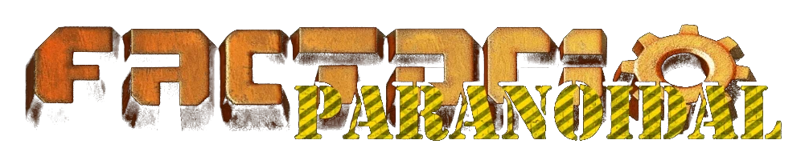
Ваниль закончилась.
Начинается паранойя.Vanilla is over.
Paranoia begins.
Около двухсот модов, вручную сшитых в одну огромную игру. Руды, которых вы не знаете. Котлы, которые сжигают половину топлива впустую. Брак, качество, жуки-джаггернауты, вражеские солдаты и межзвёздный корабль в конце пути. Здесь всё, что нужно знать перед первым запуском, и немного того, что лучше узнать самому.About two hundred mods hand-stitched into one enormous game. Ores you have never heard of. Boilers that waste half of their fuel. Defects, quality, juggernaut bugs, hostile soldiers and an interstellar ship at the end of the road. Everything you need to know before the first launch, plus a few things you should discover yourself.
Побочные эффекты: после прочтения ванильная Factorio может казаться диетической. Производитель ответственности не несёт.Side effects: after reading, vanilla Factorio may taste like diet soda. The manufacturer accepts no liability.
Что такое ParanoidalWhat is Paranoidal
Это не «сборка из популярных модов». Это одна большая игра, которую годами собирали, переводили, перебалансировали и подгоняли деталь к детали, пока швы не стали почти незаметны.Not a “pack of popular mods”, but one big game assembled, translated, rebalanced and fitted piece by piece for years, until the seams became almost invisible.
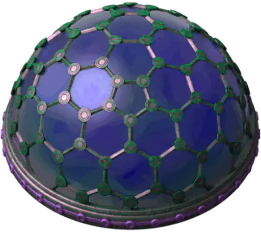
В ванильной Factorio вы добываете железо, плавите его в пластины и запускаете ракету. В Paranoidal вы добываете сапфирит, дробите его, промываете, сортируете, получаете полдюжины металлов и тонну шлака, расплавляете, разливаете в формы… а ракета — только начало финала.In vanilla Factorio you mine iron, smelt plates and launch a rocket. In Paranoidal you mine saphirite, crush it, wash it, sort it, get half a dozen metals plus a mountain of slag, melt them, cast them… and the rocket is only the beginning of the endgame.
Основа сборки — моды Angel's (руды, химия, металлургия, биология) и Bob's (машины, электроника, оружие, энергетика). Сверху — сотня модов поменьше и собственные моды Paranoidal, которых нет больше нигде: система брака с мастерской доводки, геология RSO Reforged, танковый взвод, старт с кораблекрушения, своё дерево технологий, умные жуки Rampant, материопамять и десятки «тихих» исправлений.The backbone is Angel's (ores, chemistry, metallurgy, biology) and Bob's (machines, electronics, weapons, power). On top sit a hundred smaller mods and Paranoidal's own mods that exist nowhere else: the defect system with a refinement workshop, RSO Reforged geology, the tank platoon, the shipwreck start, a custom tech tree browser, smart Rampant bugs, memory storage and dozens of quiet fixes.
Весь текст игры переведён и вычитан вручную: около 22255 строк локализации. Даже названия станций — русские, из списка на 12 543 названия.
- У вас очень много свободного времени и абсолютно некуда его девать.You have a lot of free time and absolutely nowhere to spend it.
- Ванилу вы прошли, ракеты летят по несколько в минуту, а душа просит нового челленджа.You beat vanilla, rockets fly several per minute, and your soul wants a new challenge.
- Вы считаете, что в оригинальной игре слишком мало контента.You think the base game has too little content.
- Вас не пугают, а скорее интересуют вещи, созданные людьми с параноидальными диагнозами.Things created by people with paranoid diagnoses intrigue rather than scare you.
- Вы получаете глубокое удовлетворение, доводя гигантское производство до абсолютного совершенства. Здесь это можно делать бесконечно.You feel deep satisfaction when a giant factory is polished to perfection. Here you can do that forever.
Ваниль против Paranoidal в цифрахVanilla vs Paranoidal in numbers
Каждая полоса — реальное число из игровых данных сборки, рядом — то же самое в ванильной Factorio 2.0. Переключите шкалу на линейную и посмотрите, как ваниль исчезает.Each bar is a real number from the modpack's game data, next to the same value in vanilla Factorio 2.0. Switch to the linear scale and watch vanilla disappear.
Восемь вещей, которые сломают ваши ванильные привычкиEight things that will break your vanilla habits
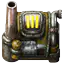
КПД 50%50% efficiencyСтартовый котёл сжигает половину угля впустую.The starter boiler wastes half of its coal.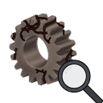
БракDefectsПервые здания выходят кривыми. Буквально.Your first buildings come out crooked. Literally. Нет железной рудыNo iron oreИ залежей камня тоже нет: камень дают валуны и щебень от дробления руды. Зато есть сапфирит.No stone deposits either: stone comes from boulders and from gravel left by ore crushing. But there is saphirite.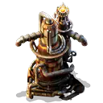
192 жидкостей192 fluidsИ многие из них взрываются.And many of them explode.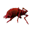
Умные жукиSmart bugsРазведка, рейды, отступления, мутации.Scouting, raids, retreats, mutations.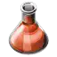
19 видов науки19 science packsЭволюция жуков растёт от ваших исследований.Bug evolution grows with your research.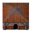
Заводы в зданияхFactories in buildingsЗайдите внутрь. И ещё внутрь.Walk inside. And inside again.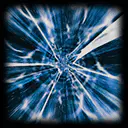
Ракета — не финалThe rocket is not the endФинал — улететь домой со сверхсветовой скоростью.The end is flying home faster than light.Перед первым запускомBefore the first launch
Не обновляйте моды сборки сами. Многие моды — это локальные форки с правками совместимости и баланса. Свежая версия с портала сломает адаптацию. Сломалось? Удалите папку mods целиком и скачайте сборку заново.Do not update the modpack's mods yourself. Many of them are local forks with compatibility and balance patches. A fresh portal version will break things. Broken? Delete the whole mods folder and download the modpack again.
Загрузка за 25 секунд вместо двух минут. Включите в config.ini кэш: cache-prototype-data=true и cache-sprite-atlas=true. Первые два запуска остаются долгими, дальше — быстро.Load in 25 seconds instead of two minutes. Enable the cache in config.ini: cache-prototype-data=true and cache-sprite-atlas=true. The first two launches stay slow, then it is fast.
DLC. Нужен Factorio 2.0 с включёнными модами Quality и Elevated Rails. Space Age сборка не поддерживает: при первом запуске его нужно выключить.DLC. You need Factorio 2.0 with the Quality and Elevated Rails mods enabled. Space Age is not supported and must be disabled on the first launch.
Крушение: первый часThe crash: hour one
Вы начинаете не с пистолета и горсти железа. Вы начинаете с пустыми карманами посреди обломков корабля. Всё, что у вас будет в первые полчаса, придётся выковырять из металлолома.You do not start with a pistol and a handful of iron. You start with empty pockets in a field of ship debris. Everything you will own in the first half hour has to be pried out of scrap metal.
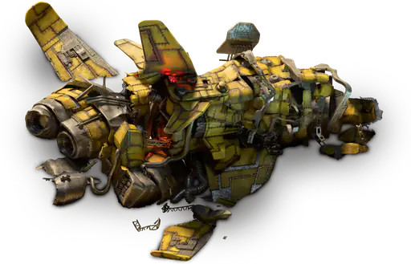
Поле обломковThe debris field
Корабль, его обломки и разбросанные вокруг остовы — это ваш стартовый склад. Каждый обломок нужно добыть, как дерево или камень: мелкие поддаются за полторы секунды, большие — за три, сам корабль — за шесть. Внутри найдутся материалы, детали, ремонтные наборы и несколько спасённых машин, которые не купишь ни за какие исследования.The ship, its debris and the hulks scattered around are your starting warehouse. Each wreck has to be mined like a tree or a rock: small ones take a second and a half, big ones three, the ship itself six. Inside you will find materials, parts, repair packs and a few salvaged machines that no research can buy.
Нажмите на обломки справа и посмотрите, что из них выпадает.Click the wrecks on the right to see what falls out.
Половина стартовых ремонтных наборов всегда обычного качества — на любом уровне старта их хватит, чтобы собрать первую мастерскую доводки.Half of the starting repair packs are always of normal quality, so on any start level you can build your first refinement workshop.
Насколько вам повезло с обломкамиHow lucky your wreckage is
Уровень старта выбирается в настройках карты. От него зависит, сколько припасов уцелело и какого они качества. Готовые изделия бросают кубик один раз на каждый вид предмета на всю карту; материалы и ленты всегда обычные.The start level is a map setting. It decides how much of the supplies survived and their quality. Finished items roll once per item type per map; materials and belts are always normal.
Твердотопливная эпохаThe burner era
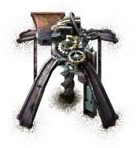
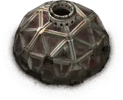
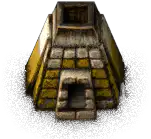
До электричества далеко, поэтому у сборки есть целая эпоха на угле и дровах: твердотопливные сборочные автоматы, манипуляторы, насосы, лаборатория и даже исследования для этого века. Первое из них, «Твердотопливная механизация», стоит всего один красный пакет.Electricity is far away, so the modpack has a whole coal-and-wood era: burner assemblers, inserters, pumps, a lab and research for that age. The first one, “Burner mechanics”, costs a single red pack.
Обратите внимание: даже твердотопливному буру нужна вода. Все руды, кроме угля, добываются только с жидкостью. Без воды бур просто стоит.Note: even the burner drill needs water. Every ore except coal can only be mined with a fluid. Without water the drill just sits there.
Ещё одна находка: руду можно дробить вручную (2 руды → 2 дроблёной + 1 щебень, 4 секунды), а дроблёный сапфирит плавится прямо в железные пластины: 7 штук дают 4 пластины и кусок шлака. Неэффективно — зато сразу.Another trick: ore can be crushed by hand (2 ore → 2 crushed + 1 crushed stone, 4 seconds), and crushed saphirite smelts straight into iron plates: 7 of them give 4 plates and a lump of slag. Inefficient, but immediate.
План на первый часA plan for hour one
Разберите обломкиStrip the wreckage
Кирка, терпение и порядок: сначала корабль (там больше всего), потом крупные остовы. Ставьте спасённый генератор — это ваше первое электричество без единого котла.Pickaxe, patience and order: the ship first (it holds the most), then big hulks. Place the salvaged generator: your first electricity without a single boiler.
Сразу изучайте «Контроль качества»Research “Quality control” right away
Почти всё, что вы соберёте в эпоху красной науки, будет бракованным. Каждый уровень контроля делает новые здания лучше. Десять уровней стоят 550 красных пакетов и не требуют других исследований.Almost everything you build in the red-science era will be defective. Each control level makes new buildings better. Ten levels cost 550 red packs and need no other research.
Вода — до рудыWater before ore
Твердотопливный береговой насос даёт 300 единиц в секунду. Трубу к бурам на сапфирите — и только потом радуйтесь первой руде.The burner offshore pump gives 300 units per second. Run a pipe to the drills on saphirite, and only then celebrate your first ore.
Пар и честный КПДSteam and honest efficiency
Первый котёл работает с КПД 50%: половина угля уходит в трубу. Это не баг, это новая энергетика. Считайте уголь заранее.The first boiler runs at 50% efficiency: half of the coal goes up the chimney. Not a bug, it is the new power system. Count your coal in advance.
Готовьте оборону раньше, чем кажетсяBuild defences earlier than you think
Деревянная дротиковая турель открывается за один пакет. Смеяться будете потом, а сейчас — Rampant умеет искать дыры в обороне.The wooden dart turret unlocks for one pack. Laugh later; right now Rampant knows how to probe your defences.
Руины чужих баз встречаются по всей карте — о них в главе «Мир и экология».Ruins of other bases are scattered all over the map; see “World & ecology”.
Брак и качествоDefects and quality
В ванили качество бывает только хорошим. Здесь у шкалы есть дно: ваши первые здания выходят кривыми, медленными и прожорливыми. Зато у шкалы нет и потолка — там, наверху, сорок ступеней вплоть до «Божественного».In vanilla, quality only goes up. Here the scale has a floor: your first buildings come out crooked, slow and power-hungry. But the scale has no ceiling either: up there are forty grades all the way to “Extreme”.
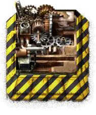
Лестница из 46 ступенейA ladder of 46 grades
Слева — пять ступеней брака, по центру — обычное качество, справа — сорок ступеней качества, сгруппированных в семейства: Хорошее, Редкое, Эпическое, Легендарное, Уникальное, Астральное, Квантовое… и несколько одиночных вершин, о которых лучше не говорить вслух. Наведите курсор на ступень, чтобы увидеть её название, уровень и шанс перехода дальше.On the left are five defect grades, in the middle is normal, on the right forty quality grades grouped into families: Uncommon, Rare, Epic, Legendary, Unique, Astral, Quantum… and a few lonely summits better left unnamed. Hover a grade to see its name, level and chance to go further.
Брак: что это и откуда берётсяDefects: what they are and where they come from
Брак — это пять ступеней ниже обычного качества: от «−1: Нестандартное» до «−5: Бракованное». Его получают только готовые изделия эпохи красной науки: здания, броня, капсулы, ремонтные наборы, научные пакеты. Материалы — руда, пластины, шестерни, платы, трубы — браком не бывают никогда.Defects are five grades below normal: from “−1: Substandard” to “−5: Defective”. Only finished items of the red-science era get them: buildings, armor, capsules, repair packs, science packs. Materials such as ore, plates, gears, circuits and pipes are never defective.
Ступень выпадает случайно при каждом крафте — ручном или в машине. В самом начале игры распределение жестокое: 90% всего, что вы сделаете, выйдет с браком «−5». Двигайте ползунок «Контроль качества» в симуляторе и смотрите, как меняется жизнь.A grade is rolled on every craft, by hand or in a machine. At the very start the distribution is brutal: 90% of everything you make comes out at “−5”. Move the “Quality control” slider in the simulator and watch life change.
Ленты, подземные ленты, разделители, погрузчики, оружие, боеприпасы, турели, модули, техника, робопорты и всё, что открывается после зелёной науки, брака не получают вообще.Belts, undergrounds, splitters, loaders, weapons, ammo, turrets, modules, vehicles, roboports and everything unlocked after green science are never defective.
| СтупеньGrade | Полезные свойстваUseful stats | ЭнергияEnergy | Расход залежи бураDrill resource drain |
|---|---|---|---|
| −5 | 33% | ×3 | 600% |
| −4 | 47% | ×2,14×2.14 | 500% |
| −3 | 60% | ×1,67×1.67 | 400% |
| −2 | 73% | ×1,36×1.36 | 300% |
| −1 | 87% | ×1,15×1.15 | 200% |
| 0 | 100% | ×1 | 100% |
Бракованный бур «−5» выедает месторождение в шесть раз быстрее. Залежь не бесконечна, а RSO и так скуп.A “−5” drill eats the ore patch six times faster. Patches are not infinite, and RSO is stingy as it is.
Контроль качества 1–10Quality control 1–10
Исследования «Контроль качества» стоят 10, 20, … 100 красных пакетов — всего 550, — и не требуют ничего другого. Каждые два уровня убирают худшую возможную ступень, нечётные сдвигают распределение наполовину. На десятом уровне новый брак больше не появляется.The “Quality control” research levels cost 10, 20, … 100 red packs (550 in total) and require nothing else. Every two levels remove the worst possible grade, odd levels shift the distribution halfway. At level ten no new defects appear.
Спойлер, без которого не обойтись: «Контроль качества 10» — обязательное условие для логистического (зелёного) пакета. Пока брак не побеждён, зелёной науки не будет. Ваниль приучила вас бежать к зелёной науке через десять минут после старта. Здесь сначала придётся навести порядок на производстве.A spoiler you cannot avoid: “Quality control 10” is required for the logistic (green) science pack. Until defects are beaten there is no green science. Vanilla taught you to rush green science ten minutes after landing. Here you clean up your production first.
Утешение: все десять уровней вместе поднимают эволюцию жуков примерно как одна обычная технология.Consolation: all ten levels together raise bug evolution about as much as one ordinary technology.
Жизнь с бракованными зданиямиLiving with defective buildings
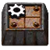
Машины и печиMachines and furnacesРаботают медленнее и тратят больше энергии: у «−5» треть скорости и втрое больший расход. Твердотопливные сжигают больше топлива, электрические забирают больше электричества.They work slower and use more energy: a “−5” machine has a third of the speed and triple the consumption. Burner ones burn more fuel, electric ones draw more power.
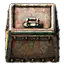
Сундуки, лаборатории, аккумуляторыChests, labs, accumulatorsУ сундука меньше слотов, лаборатория медленнее исследует, аккумулятор хранит меньше энергии. И у всех меньше здоровья.A chest has fewer slots, a lab researches slower, an accumulator stores less energy. And all of them have less health.
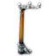
СтолбыPolesУ столба «−5» зона покрытия меньше на клетку, а провод короче. Ровная сетка столбов из ванили внезапно перестаёт смыкаться.A “−5” pole covers one tile less and has a shorter wire. Your neat vanilla pole grid suddenly stops connecting.
Бракованными зданиями вполне можно пользоваться — они просто хуже. Ленты брак не замедляет. Главная ловушка — ингредиенты: рецепт принимает предметы только одного качества, а результат не бывает лучше ингредиентов. Столб «−3» и обычная лампа в один рецепт не лягут.Defective buildings are perfectly usable, just worse. Belts are not slowed. The main trap is ingredients: a recipe accepts items of a single quality, and the result is never better than its ingredients. A “−3” pole and a normal lamp will not go into one recipe.
Мастерская доводкиThe refinement workshop
Уже сделанный брак сам не исчезает — его исправляет мастерская доводки. Кладёте изделие и ремонтные наборы, мастерская расходует их прочность, как лаборатория науку. Одна попытка на изделие: в обычном режиме 90% — на ступень выше (и ещё по 10% на каждую следующую), 10% — без изменений. Хуже изделие не становится и не пропадает.Existing defects do not go away by themselves; the refinement workshop fixes them. Insert the item and repair packs, and the workshop consumes their durability the way a lab consumes science. One attempt per item: in normal mode 90% go one grade up (plus 10% for each further step), 10% stay unchanged. The item never gets worse and never disappears.
Три режима: Обычный (быстро, наборов уходит больше), Точный (×5 времени, гарантированно +2 ступени), Эталонный (×20 времени, сразу обычное качество). Сравните их в симуляторе.Three modes: Normal (fast, uses the most packs), Precise (×5 time, guaranteed +2 grades), Reference (×20 time, straight to normal). Compare them in the simulator.
Контрольный пост и замкнутый циклThe control post and the closed loop
Контрольный пост принимает партию по заказу и сам раскладывает изделия на три выхода: годное — вперёд, брак — влево (на доводку), прочее — вправо. Электричество ему не нужно. Классическая схема: производство → пост → мастерская → обратно на пост. Брак ходит по кругу, пока не станет обычным.The control post takes an order and sorts items to three outputs by itself: good items forward, defects left (to refinement), anything else right. It needs no electricity. The classic layout: production → post → workshop → back to the post. Defects circle until they become normal.
Режимы производстваProduction modes
Всё как всегда. Брак по текущему уровню контроля.Business as usual. Defects follow the current control level.
Операция в 5 раз дольше, энергия на операцию ×25. Брак — как при контроле на 4 уровня выше, модули качества — как 3 броска.An operation takes 5× longer, energy per operation ×25. Defects as if control were 4 levels higher; quality modules roll as if 3 times.
В 20 раз дольше, энергия на операцию ×400. Новые изделия без брака, модули качества — как 10 бросков. Лаборатории и буры в начале игры стоит делать именно так.20× longer, energy per operation ×400. New items are never defective; quality modules roll as if 10 times. Make your early labs and drills this way.
Положительное качествоPositive quality
После «Контроля качества 10» и зелёной науки открываются модули качества 1–5 (каждый замедляет машину на 20%). Сила модуля зависит от качества ингредиентов: у обычного шанс перехода 0,204 — вдвое щедрее ванили, где он 0,1, — и модуль 1 даёт +2,04%, модуль 5 — +10,2%. Это те же числа, что игра показывает в подсказке модуля, а там же виден список для каждой следующей ступени: 2%, 1,96%, 1,92%…After “Quality control 10” and green science, quality modules 1–5 unlock (each slows a machine by 20%). A module's strength depends on the ingredients' quality: normal has a next-grade chance of 0.204, twice as generous as vanilla's 0.1, so module 1 gives +2.04% and module 5 gives +10.2%. These are the same numbers the game shows in the module tooltip, along with the list for every further grade: 2%, 1.96%, 1.92%…
А ещё есть стартовая настройка «Качество для всего производства», включённая по умолчанию: модули качества работают в печах и бурах, и даже руда и пластины могут выйти качественными.There is also the startup setting “Quality for all production”, enabled by default: quality modules work in furnaces and drills, and even ore and plates can come out with quality.
Каждое следующее повышение чуть труднее: шанс перехода падает на 0,004 за ступень. Иногда результат перескакивает сразу на две-три ступени. Поиграйте с калькулятором.Each further step is slightly harder: the next-grade chance drops by 0.004 per grade. Sometimes the result jumps two or three grades at once. Play with the calculator.
Переработка: четыре переработчика вместо одногоRecycling: four recyclers instead of one
Переработчики 1–4 разбирают изделие обратно и возвращают в среднем 25% ингредиентов. Отличаются они скоростью, слотами модулей и потреблением: первый доступен с самого начала, но медленный и без слотов; каждый следующий быстрее, четвёртый — вчетверо быстрее первого и с четырьмя слотами. Бракованное изделие при переработке даёт обычные компоненты: дорогой, но рабочий способ избавиться от брака. Всего в игре 2613 рецептов переработки — по одному почти на каждый предмет.Recyclers 1–4 take an item apart and return 25% of its ingredients on average. They differ in speed, module slots and power: the first is available from the very start but is slow and has no slots; each next one is faster, and the fourth is four times faster than the first with four slots. A defective item recycles into normal components: an expensive but working way to get rid of defects. The game has 2613 recycling recipes, one for almost every item.
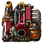
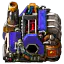
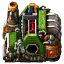
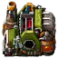
Панель контроля качества открывается сочетанием Ctrl+Shift+Q, а в Helmod есть окно «Вероятность качества» — подробнее в главе «Удобства».The quality control panel opens with Ctrl+Shift+Q, and Helmod has a “Quality probability” window; see “Quality of life”.
Энергетика и КПДPower and efficiency
В ванили котёл превращает в пар всё, что в него положили. Здесь у каждой топки есть КПД, и первый котёл честно выбрасывает половину угля в трубу. Эта цифра незаметно управляет всей вашей экономикой.In vanilla a boiler turns everything you feed it into steam. Here every furnace has an efficiency, and the first boiler honestly throws half of its coal up the chimney. That number quietly runs your whole economy.
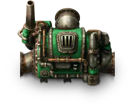
Что такое КПД и почему он так важенWhat efficiency is and why it matters so much
ВанильVanilla
Котёл: КПД 100%.
1,8 МВт = 27 угля в минуту.Boiler: 100% efficiency.
1.8 MW = 27 coal per minute.
Paranoidal
Котёл: КПД 50%.
1,8 МВт = 54 угля в минуту и вдвое больше дыма на тот же мегаватт.Boiler: 50% efficiency.
1.8 MW = 54 coal per minute and twice the smoke per megawatt.
КПД (коэффициент полезного действия) — доля энергии топлива, которая превращается в полезную работу. Котёл мощностью 1,8 МВт с КПД 50% каждую секунду сжигает 3,6 МДж топлива: 1,8 уходит в пар, 1,8 — в небо.Efficiency is the share of fuel energy that becomes useful work. A 1.8 MW boiler at 50% burns 3.6 MJ of fuel every second: 1.8 goes into steam, 1.8 into the sky.
Отсюда следствия, которые чувствуются весь первый десяток часов: угольные шахты нужны вдвое больше, загрязнение растёт быстрее, жуки злятся раньше. Зато каждый апгрейд котла — это не просто «больше мегаватт», а меньше угля и меньше смога на мегаватт.The consequences are felt for the first dozen hours: you need twice the coal mines, pollution grows faster, the bugs get angry sooner. But every boiler upgrade is not just “more megawatts”: it is less coal and less smog per megawatt.
Лестница котлов: от «полкотла» до 98%The boiler ladder: from “half a boiler” to 98%
Пять уровней твердотопливных котлов и пять уровней жидкотопливных. С каждым уровнем растут мощность и температура пара, а КПД поднимается 50 → 67 → 80 → 90 → 98%. Загрязнение при этом падает — у пятого котла оно втрое ниже, чем у первого, при впятеро большей мощности.Five tiers of solid-fuel boilers and five tiers of liquid-fuel ones. Each tier raises power and steam temperature, while efficiency climbs 50 → 67 → 80 → 90 → 98%. Pollution meanwhile drops: tier five emits three times less than tier one at five times the power.
Температура важна. Каждый уровень котла выдаёт пар горячее: 165, 315, 465, 615, 765 °C. Паровой двигатель первого уровня использует пар только до своих 165 °C. Пар на 765 °C в старом двигателе — это деньги, сожжённые дважды. Подбирайте двигатели и турбины под котёл.Temperature matters. Each boiler tier makes hotter steam: 165, 315, 465, 615, 765 °C. A tier-one steam engine only uses steam up to its own 165 °C. 765 °C steam in an old engine is money burned twice. Match engines and turbines to the boiler.
Генераторы «всё в одном» и прочая экзотикаAll-in-one generators and other exotics
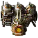
Твердотопливный генераторBurner generatorБез пара и труб: топливо → электричество. Удобно. КПД 25%. Удобство здесь стоит трёх четвертей угля.No steam, no pipes: fuel → electricity. Handy. Efficiency 25%. Convenience costs three quarters of your coal.
50 МВт из одной коробки при КПД 50%. И 1000 единиц загрязнения в минуту. Это не электростанция, это дымовая шашка размером с завод.50 MW from a single box at 50% efficiency. And 1000 pollution per minute. That is not a power plant, it is a smoke bomb the size of a factory.
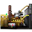
Дизель-генераторDiesel generatorСжигает жидкое топливо прямо в генераторе: до 4 МВт. Что именно залить — решает ваш кошелёк: у жидкостей разная теплотворность и разный дым.Burns liquid fuel right in the generator: up to 4 MW. What to pour in is your wallet's call: fluids differ in heat value and smoke.
Его КПД — 0,001%. Это… факел. Технически он числится генератором и горит на топливе, но светит, а не питает сеть. Не пытайтесь запитать от него завод. Мы проверили за вас — математически.Its efficiency is 0.001%. It is… a torch. Technically it is listed as a generator and burns fuel, but it gives light, not power. Do not try to run a factory off it. We checked for you, mathematically.
Атом: уран, торий, дейтерий — и ещё кое-чтоNuclear: uranium, thorium, deuterium, and something else
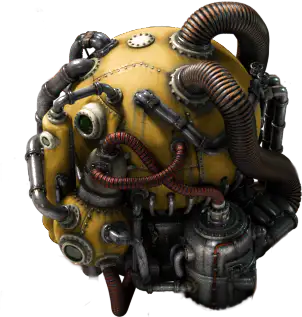
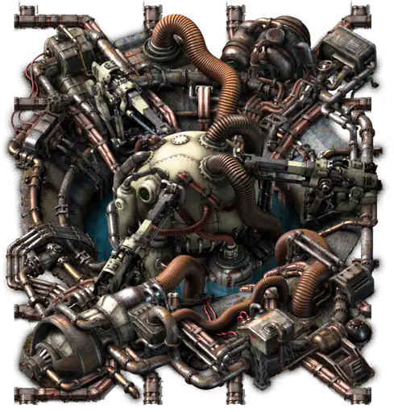
Три линейки реакторов: урановая, ториевая и дейтериевая, у каждой свои топливные элементы. Плутониевые и MOX-элементы несут по 40 ГДж, дейтериевые — до 120 ГДж (обычный урановый элемент — 8 ГДж).Three reactor lines: uranium, thorium and deuterium, each with its own fuel cells. Plutonium and MOX cells carry 40 GJ each, deuterium cells up to 120 GJ (a vanilla uranium cell holds 8 GJ).
Быстрый реактор выдаёт 160 МВт, но с КПД 25%: чтобы получить эти мегаватты, он сжигает топлива на 640 МВт. Зато его можно поставить там, где обычный реактор ещё недоступен.The fast burner reactor gives 160 MW, but at 25%: to deliver those megawatts it burns 640 MW of fuel. On the other hand, it fits where a regular reactor is not yet available.
А ещё есть термоядерный реактор — одна из самых дорогих технологий игры. Больше ничего не скажем.And then there is the fusion reactor, one of the most expensive technologies in the game. We will say no more.
Урановая руда, уран-235, уран-238 и топливные элементы в инвентаре облучают персонажа. Нужен противорадиационный костюм — подробнее в главе «Военное дело».Uranium ore, uranium-235, uranium-238 and fuel cells in your inventory irradiate the character. You need a hazmat suit; see “Warfare”.
Солнце, ветер и сезоныSun, wind and seasons
Солнечных панелей 10 видов: от малой на 27 кВт до био-солнечной фермы на 3,6 МВт. Но солнце здесь непостоянно: на планете есть сезоны, ночи бывают тёмными (яркость 5–15%), а летом и зимой выработка панелей меняется от 50 до 100%. А густой смог над панелями режет мощность ещё до 50%.There are 10 kinds of solar panels, from a small 27 kW panel to a 3.6 MW bio solar farm. But the sun is fickle: the planet has seasons, nights are dark (5–15% brightness), and panel output swings between 50% and 100% over the year. Thick smog above the panels cuts their power by up to another 50%.
Ветряки трёх уровней (67,5 кВт, 675 кВт и 6,75 МВт) работают от случайного ветра. Его скорость складывается из десяти синусоид и шума, а доля мощности — это «температура» ветра минус 15, делённая на 85. Ниже — симулятор по той же формуле, что и в игре. Штиль бывает. Привыкайте.Three tiers of wind turbines (67.5 kW, 675 kW and 6.75 MW) run on random wind. Its speed is a sum of ten sine waves plus noise, and the power share is the wind “temperature” minus 15, divided by 85. Below is a simulator with the same formula as in the game. Calm days happen. Get used to it.
РИТЭГ — радиоизотопный генератор на 6 МВт: ни топлива, ни ветра, ни солнца не просит. Догадайтесь, сколько он стоит.The RTG is a 6 MW radioisotope generator: it needs no fuel, wind or sun. Guess how much it costs.
Сеть, которая сама ест токA grid that eats its own power
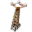
ЭлектросопротивлениеElectric resistanceКаждый столб потребляет 1 кВт. Мелочь? Тысяча столбов — это мегаватт в никуда. Длинные ЛЭП к дальним шахтам начинают стоить электричество.Every pole consumes 1 kW. Trivial? A thousand poles are a megawatt into nowhere. Long power lines to remote mines start to cost electricity.
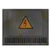
Подземные щитыUnderground boxesЭлектрощиты трёх размеров прячут сеть под землю: поверх них можно строить. А всего видов опор, столбов и щитов — 39, плюс версии со встроенными лампами.Distribution boxes of three sizes bury the grid: you can build on top of them. There are 39 kinds of poles, pylons and boxes, plus versions with built-in lamps.
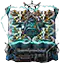
АккумуляторыAccumulatorsОт железо-углеродного (1,25 МДж) в самом начале до огромного био-аккумулятора на 300 МДж. Быстрые отдают энергию вчетверо быстрее, чем заряжаются, — на пики потребления. Медленные копят быстро, а отдают понемногу — на ночь для солнечных панелей. Ёмкие хранят больше, заряжаются и разряжаются с одной скоростью.From the iron-carbon cell (1.25 MJ) at the very start to the huge 300 MJ bio accumulator. Fast ones discharge four times faster than they charge, for consumption peaks. Slow ones charge quickly and give power back slowly, for the night after solar panels. Large ones store more and charge and discharge at the same rate.
Вы почти наверняка переживёте несколько глубоких энергетических кризисов, которые поставят базу на колени. Котлы встанут без угля, буры — без электричества, а уголь — без буров. Заранее держите резервные мощности и сундук топлива «на чёрный день».You will almost certainly live through several deep energy crises that bring the base to its knees. Boilers stop without coal, drills stop without power, and coal stops without drills. Keep reserve capacity and a “rainy day” chest of fuel in advance.
Что сжигать — уголь, кокс, брикеты, водород или нафту — разбирается в следующей главе: «Топливо и теплотворность».What to burn (coal, coke, briquettes, hydrogen or naphtha) is covered in the next chapter: “Fuels & heat value”.
Топливо и теплотворностьFuels and heat value
В ванили выбор топлива — это «уголь или твёрдое топливо». Здесь горит почти всё: 61 видов твёрдого топлива и 65 горючих жидкостей и газов. У каждого — своя теплотворность, свой дым и свой характер.In vanilla, picking a fuel means “coal or solid fuel”. Here almost everything burns: 61 solid fuels and 65 combustible liquids and gases. Each has its own heat value, its own smoke and its own temper.
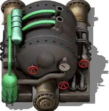
Два числа, которые решают всёTwo numbers that decide everything
Теплотворность — сколько энергии в одной штуке или одной единице жидкости. Уголь — 4 МДж, коксовые пеллеты — 15, обогащённое топливо — 50, ракетное — 100. У жидкостей счёт идёт на килоджоули за единицу: водород — 35 кДж, бутан — 710, дизель — 700.Heat value is how much energy one item or one unit of fluid holds. Coal is 4 MJ, coke pellets 15, enriched fuel 50, rocket fuel 100. Fluids count kilojoules per unit: hydrogen 35 kJ, butane 710, diesel 700.
Множитель загрязнения умножает дым установки, которая это топливо сжигает. Уголь — ×3, древесный уголь — ×1,25, обогащённое топливо — ×0,7, гидразин — ×0,1, а большинство химических жидкостей коптят на ×10, резина и сырая нефть — на ×15.The emission multiplier multiplies the smoke of whatever burns the fuel. Coal is ×3, charcoal ×1.25, enriched fuel ×0.7, hydrazine ×0.1, while most chemical fluids smoke at ×10, and rubber and crude oil at ×15.
Вместе с КПД котла эти два числа и есть экономика вашей энергетики: сколько топлива вы производите и сколько смога получите в ответ. Плохой выбор топлива не просто дороже — он злит жуков.Together with boiler efficiency, these two numbers are the economics of your power: how much fuel you must produce and how much smog you get back. A bad fuel choice is not only more expensive, it angers the bugs.
Карта горючих жидкостейA map of combustible fluids
Каждая точка — горючая жидкость или газ сборки, цвет — её цвет в трубе. По горизонтали — теплотворность (логарифмическая шкала), по вертикали — множитель загрязнения. Ищите правый нижний угол: много энергии, мало дыма. Фильтруйте газы и жидкости, наводите курсор — названия появятся.Each dot is a combustible fluid or gas of the modpack, coloured as it looks in a pipe. Horizontal: heat value (log scale); vertical: emission multiplier. Look for the bottom right corner: lots of energy, little smoke. Filter gases and liquids, hover for names.
Дизель — 700 кДж при ×0,8. Редкий случай, когда вкусно и полезно одновременно.Diesel: 700 kJ at ×0.8. A rare case of tasty and healthy at once.
Водород и гидразин — почти без дыма, но и энергии в них кот наплакал. Хороши, когда смог важнее объёмов.Hydrogen and hydrazine: almost no smoke, but barely any energy. Good when smog matters more than volume.
Жидкая резина — 1,2 МДж и ×15. Горит роскошно. Жуки оценят.Liquid rubber: 1.2 MJ and ×15. Burns gorgeously. The bugs will appreciate it.
Не обязательно гонять жидкость по трубам: бочка с горючим тоже топливо, причём теплотворность бочки — ×100 от единицы жидкости. Жидкое топливо в бочках можно возить поездом к удалённым котлам. А вот огнеопасность никто не отменял.You do not have to pipe it: a barrel of fuel is fuel too, with ×100 the heat value of a unit. Barrelled fuel can ride a train to remote boilers. Flammability still applies, though.
Твёрдое топливо: от полена до ядерного стержняSolid fuels: from a log to a nuclear rod
Угольная цепочка — первое, чему учит сборка. Уголь можно раздробить (из куска угля на 4 МДж выходят два куска дроблёного по 2,5 МДж — уже 5 МДж), обжечь в кокс, восстановить в углерод, спрессовать в коксовые пеллеты на 15 МДж. Каждый шаг повышает отдачу с одного куска — но сам цех жжёт топливо, ест электричество и дымит.The coal chain is the first lesson of the modpack. Coal can be crushed (one 4 MJ lump of coal gives two lumps of crushed coal at 2.5 MJ each, 5 MJ in total), roasted into coke, reduced into carbon, pressed into 15 MJ coke pellets. Every step raises the yield per lump, but the plant itself burns fuel, eats power and smokes.
Дерево — тоже полноценная ветка: древесные пеллеты, брикеты на 20 МДж, древесный уголь. И да, деревянные сундуки, заборы, трубы и столбы горят. Гигантский деревянный сундук — это 400 МДж. Самый уютный способ отопления.Wood is a full branch too: wood pellets, 20 MJ bricks, charcoal. And yes, wooden chests, fences, pipes and poles burn. A giga wooden chest is 400 MJ. The coziest heating method there is.
У инопланетных артефактов множитель загрязнения бывает отрицательным. Фиолетовый артефакт горит на 30 МДж с множителем −1,9: сжигая его, котёл вычищает смог вместо того, чтобы его производить. Артефакты добываются из гнёзд жуков. Получается, у войны есть экологическая сторона.Alien artifacts can have a negative emission multiplier. The purple artifact burns for 30 MJ at −1.9: a boiler burning it cleans smog instead of producing it. Artifacts come from bug nests. So war has an ecological side after all.
Топливо для техники и КПД двигателейVehicle fuel and engine efficiency
Для поездов и машин у топлива есть ещё два свойства: ускорение и максимальная скорость. Ядерное топливо разгоняет вдвое быстрее и даёт +25% к скорости. А у самих двигателей тоже есть КПД — и он разбросан от смешного до невероятного.For trains and vehicles, fuel has two more properties: acceleration and top speed. Nuclear fuel doubles acceleration and adds +25% speed. Engines themselves have an efficiency too, ranging from laughable to unbelievable.
Батарейные электровозы и маглев не жгут топливо вовсе — они ездят на заряженных аккумуляторных блоках. Подробнее в главе «Логистика».Battery-electric locomotives and the maglev burn no fuel at all: they run on charged battery packs. See “Logistics”.
Добыча и геологияMining and geology
На этой планете нет ни железной руды, ни медной, ни камня. Зато есть шесть странных минералов, бесконечные кластеры, газовые скважины, термальные разломы и геолог, который знает, где копать.This planet has no iron ore, no copper ore and no stone. Instead it has six strange minerals, infinite clusters, gas wells, thermal fissures and a geologist who knows where to dig.
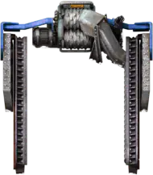
Шесть руд АнгелаAngel's six ores
Забудьте железо и медь в чистом виде. Все металлы прячутся внутри шести сложных руд: сапфирит, дживолит, стиратит, кротиниум, рубит и бобмониум. Из каждой при обогащении выходит смесь металлов, и чем глубже переработка, тем богаче смесь: от железа и меди до вольфрама, золота, урана и платины.Forget plain iron and copper. All metals hide inside six compound ores: saphirite, jivolite, stiratite, crotinnium, rubyte and bobmonium. Refining each of them yields a mix of metals, and the deeper you process, the richer the mix: from iron and copper up to tungsten, gold, uranium and platinum.
Камня нет вообще: его спекают из щебня, который сыплется побочкой при дроблении любой руды. А уголь — единственное, что добывается по-ванильному, без жидкости.There is no stone at all: you sinter it from crushed stone, a by-product of crushing any ore. Coal is the only thing mined the vanilla way, without fluid.
Две жидкости — две беды. Обычная руда просит воду или пар, а бесконечный кластер той же руды — кислоту. Бур на границе обычной и бесконечной руды встанет, потому что не может пить две жидкости сразу. Выход — фильтр добычи: любой бур можно настроить, какую руду он копает (рамкой с фильтром по бурам).Two fluids, two troubles. Regular ore wants water or steam, while an infinite cluster of the same ore wants acid. A drill on the border of regular and infinite ore stops, because it cannot drink two fluids. The fix is the mining filter: any drill can be told which ore to dig (drag a filter box over the drills).
RSO Reforged: месторождения, ради которых нужны поездаRSO Reforged: ore fields worth building a railway for
Месторождения расставляет RSO Reforged — собственный форк Resource Spawner Overhaul. Он скуп: поля редкие, но крупные, и за пределами стартовой зоны до них приходится тянуть железную дорогу очень рано. Зато все месторождения и вражеские базы размещает генератор карты — предпросмотр карты при создании мира показывает настоящую карту.Ore fields are placed by RSO Reforged, Paranoidal's own fork of Resource Spawner Overhaul. It is stingy: fields are rare but large, and outside the start area you will need a railway to them very early. On the bright side, all fields and enemy bases are placed by the map generator, so the map preview at world creation shows the real map.
×5 к богатству. По умолчанию включена стартовая настройка «Богатство всех ресурсов ×5»: каждое месторождение при генерации становится впятеро богаче. Описание настройки прямо говорит: не отключайте, если вы новичок в Paranoidal.×5 richness. The startup setting “Richness of all resources ×5” is on by default: every ore field becomes five times richer when generated. The setting's own description says: do not turn it off if you are new to Paranoidal.
Состав полей зависит от расстояния до старта и от цвета почвы: на почве «своего» цвета соответствующая руда, уголь или нефть встречаются вдвое чаще. Стартовая зона не меняется, первое кольцо месторождений гарантировано.Field composition depends on the distance from the start and on soil colour: on soil of “its” colour the matching ore, coal or oil is twice as likely. The start area is unchanged, and the first ring of fields is guaranteed.
У некоторых полей есть богатая жила или бесконечное ядро. Такие поля почти всегда охраняет гнездо побольше. Хотите сокровищ — готовьте артиллерию.Some fields have a rich vein or an infinite core. Such fields are almost always guarded by a bigger nest. Want treasure? Bring artillery.
На карте встречаются руины чужих приисков, а в выработанном месторождении иногда открывается новая жила. Геологический радар в режиме разведки подписывает поле: бедное, среднее или богатое, с жилой, с ядром, под охраной.The map hides ruins of old mines, and a depleted field sometimes reveals a new vein. The geological radar in survey mode labels each field: poor, average or rich, with a vein, with a core, guarded.
Формы месторождений: ни одного одинаковогоField shapes: no two alike
Кроме классических пятна, ромба и кольца, поля бывают серпами, длинными изогнутыми пластами, россыпью крапинок, архипелагами островков и звёздами с 4–6 лучами. Каждое поле изогнуто шумом. У многих руд есть «фирменная» форма: уголь любит пласты, рубит — крапинки, кротиниум — ромбы, сапфирит — звёзды, дживолит — серпы. Нефть, газ и разломы ложатся гроздью или цепочкой вдоль линии разлома. Запустите «разведку» и посмотрите, что найдёт геолог.Besides the classic blob, diamond and ring, fields come as crescents, long bent seams, scattered specks, archipelagos of islets and stars with 4–6 rays. Every field is bent by noise. Many ores have a “signature” shape: coal likes seams, rubyte specks, crotinnium diamonds, saphirite stars, jivolite crescents. Oil, gas and fissures lie in clusters or in chains along a fault line. Run a “survey” and see what the geologist finds.
Буры: от «копает» до «выкапывает квартал»Drills: from “digs” to “digs a whole block”
Две ветки электробуров: скоростные (до ×16 к первому) и площадные — последний копает квадрат 17×17 клеток против ванильных 5×5. Плюс нефтяные вышки пяти уровней, экстракторы термальной воды и тяжёлые береговые насосы.Two branches of electric drills: fast ones (up to ×16 the first) and area ones, the last of which mines a 17×17 square against vanilla's 5×5. Plus five tiers of pumpjacks, thermal water extractors and heavy offshore pumps.
Планировщик шахт сам расставит буры на поле: Ctrl+M.The mining patch planner lays out drills on a field for you: Ctrl+M.
Автодемонтаж. Бур, под которым кончилась руда, сам помечается на снос.Auto deconstruct. A drill whose ore ran out marks itself for removal.
Обогащение и металлургияRefining and metallurgy
Добыть руду — полдела. Её нужно раздробить, промыть, выщелочить, очистить и рассортировать, чтобы достать из неё металлы. А потом расплавить, смешать в сплав и разлить в формы. Добро пожаловать в настоящую металлургию.Mining ore is only half the job. It must be crushed, washed, leached, purified and sorted to get metals out of it. Then melted, mixed into alloys and cast. Welcome to real metallurgy.
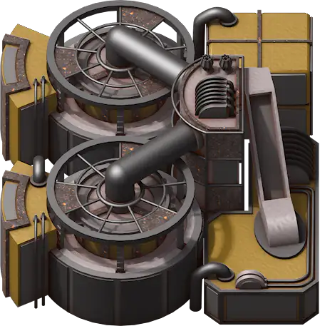
Четыре ступени: чем глубже, тем богачеFour tiers: the deeper, the richer
Сырая руда проходит путь дробилка → флотация → выщелачивание → очистка, и на каждой ступени её можно отправить на сортировку. Дроблёный сапфирит отдаёт только железо и медь. Кристаллы того же сапфирита — уже железо, медь, кварц, никель и рутил. А очищенная руда — ещё и вольфрам, причём без грамма шлака. Выберите руду и ступень:Raw ore travels crusher → flotation → leaching → refinery, and at every tier it can go to sorting. Crushed saphirite yields only iron and copper. Saphirite crystals already give iron, copper, quartz, nickel and rutile. Purified ore adds tungsten, without a gram of slag. Pick an ore and a tier:
Жеоды. Флотация с вероятностью 50% выбрасывает жеоду. Из жеод получают кристаллы и драгоценные камни — те самые, что идут в лазерное оружие и модули.Geodes. Flotation drops a geode with a 50% chance. Geodes turn into crystals and gems, the very ones used in laser weapons and modules.
Смешанная сортировка. Две-три руды плюс катализатор дают один нужный металл чисто: например, сапфирит и дживолит с бурым катализатором — только железо. Так добывают дефицит: кобальт, золото, уран, платину, хром, марганец.Mixed sorting. Two or three ores plus a catalyst give one wanted metal cleanly: saphirite and jivolite with a brown catalyst yield iron only. That is how you get the scarce ones: cobalt, gold, uranium, platinum, chrome, manganese.
Грязная вода. Флотация оставляет сернистую, зелёную, красную и прочую сточную воду. Её придётся очищать или утилизировать — в канализацию её не выльешь.Dirty water. Flotation leaves sulfuric, green, red and other waste water. You will have to treat or void it; there is no sewer to pour it into.
Шлак: побочный продукт, который никуда не денетсяSlag: the by-product that will not go away
Шлак производят 56 рецептов — больше, чем любой другой продукт в игре. Он выходит при сортировке, при прямой плавке дроблёной руды, в металлургии. Шлак нельзя просто выкинуть: склад забьётся за час. Его перерабатывают в шлаковую взвесь и минеральный раствор, из которого снова получают рудное сырьё. Круг замыкается.Slag is produced by 56 recipes, more than any other product in the game. It comes from sorting, from smelting crushed ore directly, from metallurgy. You cannot just dump it: storage clogs within an hour. It is processed into slag slurry and mineral sludge, which yields ore feedstock again. The circle closes.
Совет: в начале игры отдайте шлак свалке — она съест мусор ценой загрязнения.Tip: early on, feed slag to the landfill; it eats junk at the cost of pollution.
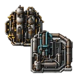
Металлургия: слитки, расплав и литьёMetallurgy: ingots, melt and casting
Обработка рудыOre processing
Металлическая руда после сортировки превращается в обработанную руду или гранулы — чем лучше подготовка, тем больше металла на выходе.After sorting, metal ore becomes processed ore or pellets: the better the preparation, the more metal comes out.
Слитки в доменной печиIngots in a blast furnace
Доменная печь превращает подготовленную руду в слитки. У каждого металла свой рецепт и свои добавки — где-то нужен уголь или кокс, где-то газ или химия.The blast furnace turns prepared ore into ingots. Each metal has its own recipe and additives: some need coal or coke, others gas or chemicals.
Расплав в индукционной печиMelt in an induction furnace
Слитки плавят в жидкий металл. Да, жидкое железо течёт по трубам.Ingots are melted into liquid metal. Yes, molten iron flows through pipes.
Литьё и МНЛЗCasting and strand casting
Литейная машина разливает металл в пластины, прутки, проволоку. Машина непрерывного литья заготовок выдаёт поток продукции для больших заводов.The casting machine pours metal into plates, rods and wire. The strand casting machine delivers a continuous flow for big factories.
Сплавы в смесителеAlloys in a mixer
Смеситель сплавов соединяет расплавы напрямую: бронза, латунь, нитинол, инвар, кобальтовая сталь, карбид вольфрама. Нитинол, к слову, нужен в 57 рецептах.The alloy mixer combines melts directly: bronze, brass, nitinol, invar, cobalt steel, tungsten carbide. Nitinol, by the way, goes into 57 recipes.
Материалы, без которых не обойтисьMaterials you cannot do without
Какие предметы чаще всего стоят в рецептах сборки? Вот честный рейтинг по 2865 рецептам. Сталь в ванили — важный материал. Здесь сталь — это валюта.Which items appear in recipes most often? Here is an honest ranking over 2865 recipes. In vanilla, steel is an important material. Here steel is currency.
Химия, нефть и газChemistry, oil and gas
В ванили восемь жидкостей. Здесь их 192, и половина из них хочет вас убить: одни горят, другие взрываются, третьи просто едкие. Дядя Ангел устроил здесь настоящий рай для химиков-психопатов.Vanilla has eight fluids. Here there are 192, and half of them want you dead: some burn, some explode, the rest are merely corrosive. Uncle Angel built a true paradise for psycho chemists.
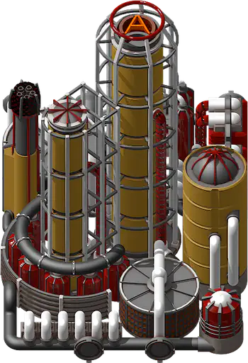
Стена жидкостейThe wall of fluids
Вот они все. Каждая иконка — отдельная жидкость или газ со своими рецептами, своими трубами и своим цветом. Наведите курсор, чтобы прочитать название, или найдите нужное поиском.Here they all are. Every icon is a separate fluid or gas with its own recipes, its own pipes and its own colour. Hover to read a name, or use the search.
Нефть и газ по-ангеловскиOil and gas, Angel's way
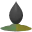
Многофазная нефтьMulti-phase oilСкважина даёт не нефть, а многофазную смесь. Её разделяют на фракции: нафту, мазут, минеральное масло и газы. Дальше — паровой крекинг, синтез-газ, метанол, ароматика, пластмассы, смолы, каучук и так далее, вплоть до высокооктанового обогащённого топлива.A well does not give oil but a multi-phase mix. It is separated into fractions: naphtha, fuel oil, mineral oil and gases. Then steam cracking, syngas, methanol, aromatics, plastics, resins, rubber and so on, all the way to high-octane enriched fuel.
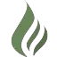
Газовые скважиныGas wellsОтдельные месторождения природного газа. Газ очищают от кислых примесей и разделяют на метан, этан, бутан и тяжёлые фракции. Из сероводорода получают серу — в этой сборке сера добывается совсем не так, как в ванили.Separate natural gas fields. Gas is cleaned of acidic impurities and split into methane, ethane, butane and heavy fractions. Hydrogen sulfide yields sulfur: in this modpack sulfur comes from a very different place than in vanilla.
Вода бывает разнойWater comes in many kinds
Очищенная вода, солёная вода, минерализованная вода, термальная вода из разломов и целая палитра сточных вод после флотации: сернистая, зелёная, красная, жёлто-зелёная. Каждую нужно чистить или утилизировать. Для этого есть отстойники, факельные установки и промывка песка. А ещё электролиз: вода → водород + кислород, солёная вода → хлор и щёлочь.Purified water, saline water, mineralized water, thermal water from fissures and a whole palette of waste water after flotation: sulfuric, green, red, yellow-green. Each must be treated or voided. There are clarifiers, flare stacks and sand washing for that. And electrolysis: water → hydrogen + oxygen, saline water → chlorine and lye.
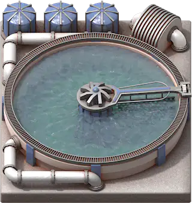
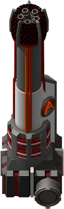
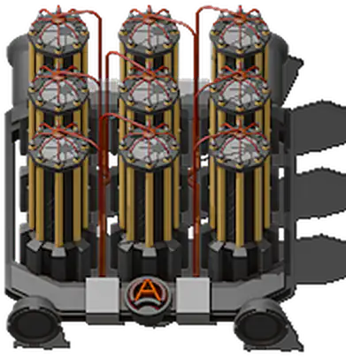
Жалко сжигать? Ёмкость материопамяти хранит бесконечный объём любой жидкости — чем больше в ней лежит, тем больше электричества она ест. Подробнее — в главе «Производство».Too precious to burn? The fluid memory unit stores an infinite amount of any fluid; the more it holds, the more power it eats. See “Production”.
Экзотическая химияExotic chemistry
Цепочка обогащения урана здесь заменена на гораздо более сложную и «реалистичную», чем ванильный процесс Коварекса. А нейротоксин… скажем так: химия бывает и военной. Смотрите «Военное дело».The uranium enrichment chain is replaced with a far more intricate and “realistic” one than vanilla's Kovarex. And neurotoxin… let us say chemistry can be military too. See “Warfare”.
Огнеопасно: трубы, которые взрываютсяFlammable: pipes that explode
Горючие жидкости и газы опасны где угодно: в трубах, резервуарах, машинах и цистернах. Шальная пуля, кислотный плевок жука, электрический разряд или лазер могут поджечь трубопровод. Огонь бежит по трубам, соседние резервуары нагреваются, боеприпасы рядом детонируют. Каждый взрыв выбрасывает загрязнение по объёму сгоревшего: полный резервуар на 25 000 единиц — это 25 000 загрязнения разом.Flammable liquids and gases are dangerous anywhere: in pipes, tanks, machines and wagons. A stray bullet, an acid spit, an electric arc or a laser can ignite a pipeline. Fire runs along pipes, neighbouring tanks heat up, nearby ammo cooks off. Every explosion releases pollution equal to the volume burned: a full 25,000-unit tank is 25,000 pollution at once.
Загоревшийся крупный резервуар горит минуту. Если за это время слить горючее ниже четверти — пожар погаснет. Не успели — мощный взрыв и десятки долгих пожаров вокруг. Попробуйте сами, это безопасно. Здесь.A large tank on fire burns for a minute. Drain the fuel below a quarter in time and the fire goes out. Too late: a massive explosion and dozens of long fires around. Try it yourself, it is safe. Here.
Пожарная турель тушит огонь водой — не жуков, а пламя. Две модели: на 12 и на 24 клетки. Ставьте их у нефтехимии заранее.The fire safety turret fights fire with water: not bugs, flames. Two models, with 12 and 24 tile range. Put them next to your petrochemistry in advance.
Трубы, которые слушаютсяPipes that obey
Прямые, Г- и Т-образные трубы, которые не склеиваются с соседними. Параллельные трубопроводы без подземок.Straight, elbow and T pipes that do not merge with neighbours. Parallel pipelines without undergrounds.
Перепускной, дозаправки и обратный, с порогами, которые настраиваются клавишами Num+/Num−.Overflow, top-up and check valves, with thresholds adjusted by Num+/Num−.
Y подсвечивает трубопроводную систему, Shift+Y — все видимые. Плюс числовой индикатор уровня жидкости.Y highlights a pipe system, Shift+Y all visible ones. Plus a numeric fluid level indicator.
Сборочные автоматы, химзаводы и НПЗ пропускают жидкость через себя, как электробуры. Подземные трубы сами соединяются уголком.Assemblers, chemical plants and refineries pass fluid through themselves like drills. Underground pipes connect around corners automatically.
Биология и фермыBiology and farms
Посреди дымящих заводов здесь растут леса, цветут водоросли, плавают рыбы и размножаются фугу. Не ради красоты: из биологии получают целлюлозу, масла, пластик, топливо, науку — и чистый воздух.Amid the smoking factories, forests grow, algae bloom, fish swim and puffers breed. Not for beauty: biology yields cellulose, oils, plastic, fuel, science, and clean air.
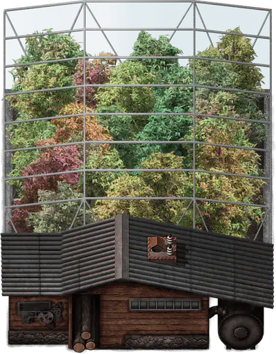
Лес как производствоForest as an industry
Дерево здесь — ресурс первой необходимости: из него делают ранние столбы, платы, бумагу, топливо и даже турели. Деревья выращивают в питомниках из семян, сажают саженцами и собирают на био-фермах. Удобрение превращает пустыню в луг, а терраформер делает это сам, по площади.Wood is a basic necessity here: early poles, circuit boards, paper, fuel and even turrets are made of it. Trees are grown in nurseries from seeds, planted as seedlings and harvested in bio farms. Fertilizer turns desert into grassland, and the terraformer does it on its own, area by area.
А дикий лес на карте живёт своей жизнью: деревья медленно разрастаются и отмирают при определённых условиях. Тот лес, что вы вырубили, может вернуться. Тот, что вы задушили смогом, — нет.The wild forest lives a life of its own: trees slowly spread and die off under certain conditions. The forest you cut may come back. The one you choked with smog will not.
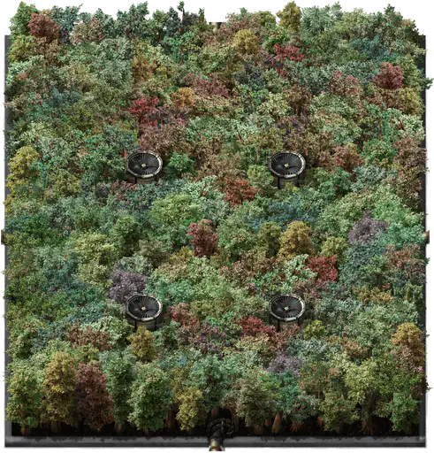
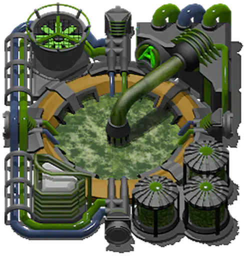
Сельское хозяйство АнгелаAngel's agriculture
Зелёные, бурые, красные и синие водоросли — первый шаг к целлюлозе, древесной массе, бумаге и химии. Растут на воде и углекислом газе, то есть буквально на выхлопе.Green, brown, red and blue algae are the first step to cellulose, wood pulp, paper and chemistry. They grow on water and carbon dioxide, literally on exhaust.
Умеренные, пустынные и болотные фермы выращивают свои культуры, а из урожая получают масла, сахар, кормовую массу. Растения с чужой планеты дают образцы для науки: 54 технологий требуют образцы инопланетной флоры.Temperate, desert and swamp farms grow their own crops, which become oils, sugar and nutrient pulp. Alien plants provide samples for science: 54 technologies require alien plant-life samples.
Рыбные садки разводят рыбу, а из рыбы давят рыбий жир — одно из самых калорийных жидких топлив в игре. Да, можно отапливать базу рыбой.Fish tanks breed fish, and fish are pressed into fish oil, one of the most energy-dense liquid fuels in the game. Yes, you can heat your base with fish.
Фугу: генетическая лотереяPuffers: a genetic lottery
Фугу (в оригинале — puffers) — летающие инопланетные создания, которые выделяют газы. Их разводят в рефугиуме, и разведение — чистая лотерея: из яйца одного вида чаще всего выходит такое же яйцо, но с шансом 5–10% — яйцо совсем другой породы. Всего пород пять: газообразующая, прогорклая, пылающая, кислотообразующая и разъедающая.Puffers are flying alien creatures that exhale gases. They are bred in a refugium, and breeding is a pure lottery: an egg of one kind usually yields the same egg, but with a 5–10% chance an egg of a completely different breed. There are five breeds: gaseous, rancid, blazing, acidic and corrosive.
Природные гнёзда фугу встречаются и на карте — их можно использовать как сырьё. Каждое — со своим случайным уловом.Natural puffer nests also occur on the map and can be harvested as a raw input, each with its own random catch.
Есть ещё рефугиум кусак. Вы правильно поняли: можно разводить тех самых жуков у себя на заводе — ради биоматериалов. Что может пойти не так. Бойня и инкубатор прилагаются.There is also a biter refugium. You read that right: you can breed those very bugs in your factory, for biomaterials. What could go wrong. Butchery and hatchery included.
Машины, которые чистят воздухMachines that clean the air
В ванили единственный способ бороться со смогом — модули эффективности. Здесь целый класс машин поглощает загрязнение. Ниже — самые сильные «зелёные лёгкие» сборки, числа взяты из игры.In vanilla, the only weapon against smog is efficiency modules. Here a whole class of machines absorbs pollution. Below are the strongest “green lungs” of the modpack, numbers straight from the game.
Производство и модулиProduction and modules
233 видов сборочных машин, 74 модулей в 10 семействах, заводы внутри зданий и склады, в которые помещается бесконечность. Производство здесь — отдельная наука.233 kinds of crafting machines, 74 modules in 10 families, factories inside buildings and storage that holds infinity. Production here is a science of its own.
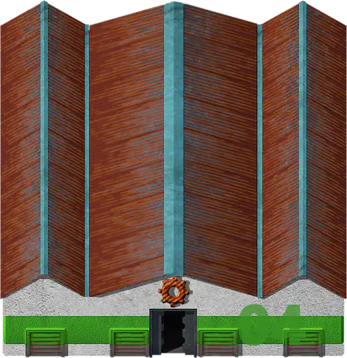
Машины: специализация и ступениMachines: specialization and tiers
В ванили есть три сборочных автомата, химзавод, НПЗ и печи. Здесь у каждой отрасли свои станки: дробилки, флотаторы, электролизёры, смесители, литейные машины, газоперерабатывающие и нефтеперерабатывающие заводы, фермы, электронные сборщики, — и почти у каждого 3–6 уровней. Самый быстрый «обычный» сборщик электроники работает со скоростью ×8 и держит 8 модулей.Vanilla has three assemblers, a chemical plant, a refinery and furnaces. Here every industry has its own machines: crushers, flotation cells, electrolysers, mixers, casting machines, gas and oil refineries, farms, electronics assemblers, and almost every one has 3–6 tiers. The fastest “regular” electronics assembler runs at ×8 speed with 8 module slots.
Модули: восемь уровней и квантовый бонусModules: eight tiers and a quantum bonus
Скорость, эффективность и продуктивность здесь идут до 8-го уровня. Есть модули очистки (−загрязнение) и загрязнения (+загрязнение, кому-то и это нужно), гибриды «эффективность + очистка», «продуктивность + эффективность», «скорость + эффективность». Модули качества — до 5-го уровня. А на вершине — квантовые модули, которые дают сразу скорость, продуктивность, экономию энергии и чистоту. Выберите семейство и уровень:Speed, efficiency and productivity go up to tier 8. There are cleaning modules (−pollution) and polluting ones (+pollution; someone needs that too), hybrids “efficiency + cleaning”, “productivity + efficiency”, “speed + efficiency”. Quality modules go to tier 5. And at the top sit quantum modules, which give speed, productivity, energy saving and cleanliness all at once. Pick a family and a tier:
Модули исследуют платами. Технологии модулей изучают не обычной наукой, а платами модулей — в отдельной лаборатории модулей. Плата скорости, продуктивности, эффективности, очистки… Это 8 отдельных «научных пакетов» только для модулей.Modules are researched with boards. Module technologies are researched not with regular science but with module circuit boards, in a separate module lab. Speed board, productivity board, efficiency board, cleaning board… That is 8 extra “science packs” just for modules.
+50% скорости, +50% продуктивности, −50% энергии и −50% загрязнения. Одновременно. В одном модуле. Цену рецепта лучше не смотреть до того, как вы до него доберётесь.+50% speed, +50% productivity, −50% energy and −50% pollution. At once. In one module. Better not look at the recipe cost until you get there.
Заводы внутри зданийFactories inside buildings
Здание фабрики ставится как обычная постройка, но внутрь можно войти. Внутри — пустой цех, который соединяется с миром снаружи лентами, трубами, сундуками, теплом и сигналами (каждый тип связи открывается исследованием). Переставили здание — внутри всё осталось на месте.A factory building is placed like any building, but you can walk inside. Inside is an empty hall connected to the outside by belts, pipes, chests, heat and signals (each connection type unlocks by research). Move the building and everything inside stays put.
| ЗданиеBuilding | СнаружиOutside | ВнутриInside | Выигрыш площадиArea gain |
|---|---|---|---|
| 1 | 8×8 | 30×30 | ×14 |
| 2 | 12×12 | 46×46 | ×14,7 |
| 3 | 16×16 | 60×60 | ×14 |
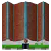 4 Paranoidal | 20×20 | 90×90 | ×20 |
И да, здание фабрики можно поставить внутри другого здания фабрики. Четвёртое здание — собственное дополнение Paranoidal. Внутри нельзя строить артиллерию, ракетные шахты и посадочные площадки; на фабрики не действуют брак и качество. Все ваши фабрики видны в диспетчерской: Ctrl+Shift+F.And yes, a factory building can be placed inside another factory building. Building 4 is Paranoidal's own addition. You cannot build artillery, rocket silos or landing pads inside; defects and quality do not apply to factories. All your factories are listed in the dispatcher: Ctrl+Shift+F.
Материопамять: склад для бесконечностиMemory storage: a warehouse for infinity
Хранилище материопамяти — сундук 6×6, который привязывается к одному предмету одного качества и хранит его в неограниченном количестве. В самом сундуке всегда держится буфер для манипуляторов, остальное уходит «в память». Ёмкость материопамяти делает то же с любой жидкостью или газом. Есть и логистическая версия для роботов.The memory storage unit is a 6×6 chest bound to one item of one quality that stores it in unlimited amounts. The chest itself always keeps a buffer for inserters; everything else goes “into memory”. The fluid memory unit does the same with any liquid or gas. There is a logistic version for robots, too.
Подвох в энергии: чем больше лежит, тем больше блок ест. Если питания меньше 90% — обмен с памятью останавливается. А если блок разрушить — всё содержимое пропадёт. Совсем. Качество блока снижает потребление, вплоть до −80% у высшей ступени.The catch is power: the more it holds, the more the unit eats. Below 90% power, exchange with memory stops. And if the unit is destroyed, everything inside is lost. Entirely. Unit quality lowers consumption, down to −80% at the top grade.
Склады, сундуки и сбор хламаWarehouses, chests and junk collection
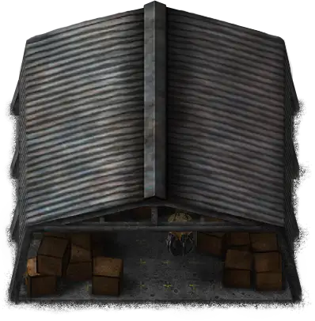
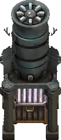
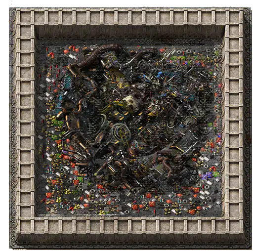
ЛогистикаLogistics
Месторождения далеко, рецептов тысячи, а промежуточных продуктов столько, что «главная шина» превращается в главную магистраль. Здесь логистика — не удобство, а условие выживания.Ore fields are far away, recipes number in the thousands, and there are so many intermediates that the “main bus” becomes a main highway. Logistics here is not a convenience but a survival condition.
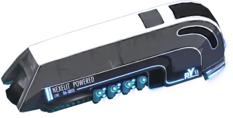
Ленты: от черепахи до «гипер»Belts: from tortoise to “ultimate”
Шесть уровней лент: от медленной (7,5 предмета в секунду) до гипер-конвейера на 180 — в 24 раза быстрее. Подземные ленты прыгают до 27 клеток, а сверхдлинные подземные — на 250 клеток: прокладывать их дорого, зато одна такая пара заменяет целую эстакаду. Есть и труба на 250 клеток.Six belt tiers: from the slow one (7.5 items per second) to the ultimate belt at 180, 24 times faster. Undergrounds jump up to 27 tiles, and extra-long undergrounds span 250 tiles: expensive to lay, but one pair replaces an entire overpass. There is a 250-tile pipe, too.
Кисть лент строит ленты по ходу движения, разворот ленты переворачивает весь участок (Alt+R), а G подсвечивает всю линию ленты.The belt brush lays belts as you move, belt reverser flips a whole segment (Alt+R), and G highlights an entire belt line.
Погрузчики грузят прямо с ленты в машину без манипуляторов. А ленты окрашены по направлению стрелок — видно, куда всё едет.Loaders move items from a belt straight into a machine without inserters. And belts are tinted along their arrows, so you can see where everything goes.
Манипуляторы, которые можно настроитьInserters you can configure
21 видов манипуляторов: твердотопливный, паровой (работает на паре, а не на электричестве), бронированный, обычные и массовые четырёх скоростей. Главное отличие от ванили — настройка: после исследований манипулятору можно сменить точку захвата и выгрузки, сделать его «длинным» или «ближним», выбрать сторону ленты. Окно настройки — Shift+E на манипуляторе.21 kinds of inserters: burner, steam (runs on steam, not electricity), armoured, regular and bulk at four speeds. The main difference from vanilla is configuration: after research an inserter can change its pickup and drop points, become “long” or “near”, pick a belt lane. The settings window is Shift+E over an inserter.
А для погрузки поездов есть краны: у погрузочных кранов к хвату добавляется почти двести предметов за раз. Пропускную способность любого манипулятора игра показывает прямо при наведении (об удобствах — в главе «Удобства»).For loading trains there are cranes: loading cranes get a bonus of almost two hundred items per swing. The game shows the throughput of any inserter on hover (more conveniences in “Quality of life”).
Поезда: от дрезины до маглеваTrains: from a handcar to a maglev
Из-за скупых месторождений поезда нужны рано. Первый из них — локомотив МК0 из сборки Beta 8: слабенький, на угле, с КПД 50%, 54 км/ч, зато доступен ещё до нормальной железной дороги. Дальше — обычные, бронированные, MK2 и MK3, а потом электровозы на аккумуляторных блоках и маглев. Устройте гонку:Because ore fields are stingy, you need trains early. The first is the MK0 locomotive from Beta 8: weak, coal-fired, at 50% efficiency, 54 km/h, but available before proper railways. Then come regular, armoured, MK2 and MK3 locomotives, and later battery-electric locomotives and the maglev. Run a race:
Электровоз ездит на аккумуляторных блоках четырёх уровней. Блоки заряжают на зарядных станциях (до 100 МВт у суперзарядки), а пустые возвращают на подзарядку. Зарядка блока 4-го уровня — один из самых долгих рецептов в игре: почти 32 минуты.Battery locomotives run on battery packs of four tiers. Packs are charged at charging stations (up to 100 MW for the supercharger), and empty ones go back for recharge. Charging a tier-4 pack is one of the longest recipes in the game: almost 32 minutes.
Гружёный поезд разгоняется медленнее: чем больше занятых слотов в вагонах и жидкости в цистернах, тем хуже ускорение — вплоть до 10% от обычного при 80 занятых слотах. Пустой состав летит, полный — тянется.A loaded train accelerates slower: the more occupied wagon slots and fluid in tanks, the worse the acceleration, down to 10% at 80 occupied slots. An empty train flies, a full one crawls.
Локомотивы, смотрящие назад, тоже тянут: сцепки «туда-обратно» получают полную мощность обоих. И названия станций — русские, из списка на 12 543 названия, под звуки настоящих российских поездов.Backward-facing locomotives pull too: push-pull consists get the full power of both. Station names are Russian, from a list of 12,543, to the sounds of real Russian trains.
Cybersyn превращает железную дорогу в автоматическую сеть поставок: станции сами заказывают грузы, поезда сами едут. А DLC Elevated Rails добавляет рельсы на эстакадах — развязки без пересечений.Cybersyn turns your railway into an automatic supply network: stations order goods, trains go by themselves. And the Elevated Rails DLC adds rails on viaducts: junctions without crossings.
Роботы, которые иногда падаютRobots that sometimes crash
Ещё до логистической сети у вас будут нанороботы: специальный излучатель стреляет одноразовыми наноботами, которые строят по чертежам, чинят стены и расчищают лес. Это не читерство, а честная ранняя автоматизация стройки.Before the logistic network you get nanobots: a special emitter fires single-use nanobots that build from blueprints, repair walls and clear forests. Not a cheat, an honest early construction automation.
Логистические роботы здесь иногда разбиваются — особенно в пробках над перегруженным робопортом. Груз не пропадает: строительный робот подберёт его. Но вывод простой: роботам — ценные грузы, руде — ленты и поезда.Logistic robots here occasionally crash, especially in traffic jams over an overloaded roboport. The cargo is not lost: a construction robot picks it up. The lesson is simple: robots for valuable goods, belts and trains for ore.
Грузовой самолёт возит товары по воздуху, логитрон — логистический паук. Машины, танки и самолёты слушаются «привязки к углу», а физика транспорта стала реалистичнее. А ещё в дереве технологий притаились телепорты.The cargo plane hauls goods by air, the logitron is a logistic spider. Cars, tanks and planes snap to angles, and vehicle physics became more realistic. And somewhere in the tech tree hide teleporters.
НаукаScience
1342 технологий, цепочка зависимостей глубиной 72 шага, 19 видов научных пакетов. И одна неприятная новость: каждое исследование делает жуков сильнее.1342 technologies, a dependency chain 72 steps deep, 19 kinds of science packs. And one piece of bad news: every research makes the bugs stronger.
Научные пакетыScience packs
Семь ванильных пакетов никуда не делись, но к ним добавились транспортный, золотой, семь инопланетных (из артефактов, которые падают с жуков и гнёзд), образцы инопланетной флоры, а в эндгейме — данные с космической станции и данные со спутника. И даже первые пакеты здесь требуют серьёзного производства: «штамповать науку тысячами» не выйдет.The seven vanilla packs are still here, joined by the transport pack, the gold pack, seven alien packs (made from artifacts dropped by bugs and nests), alien plant samples, and in the endgame space station data and satellite data. Even the first packs need serious production: “stamping science by the thousands” will not work.
Дерево, в котором можно заблудитьсяA tree you can get lost in
Технологии сгруппированы по «эпохам» — по числу видов пакетов в стоимости. Больше всего исследований на трёх-четырёх видах науки, а на самом верху стоят восемь технологий, которые требуют восемь видов пакетов одновременно.Technologies are grouped into “eras” by the number of pack kinds in their cost. Most research uses three or four kinds of science, and at the very top sit eight technologies requiring eight kinds of packs at once.
Если изучить всё, кроме бесконечных технологий, понадобится примерно 69192268 научных пакетов. Это не опечатка. Изучать всё подряд — плохая идея: выбирайте, что действительно нужно.To research everything except infinite technologies you would need about 69192268 science packs. That is not a typo. Researching everything in sight is a bad idea: choose what you actually need.
Своё окно технологий. Ctrl+T открывает дерево Paranoidal: эпохи без горизонтальной прокрутки, цепочки предков, поиск по тому, что технология открывает, планировщик пути и общая цель с автоматической очередью. В ванильном окне такого не найти.A custom tech window. Ctrl+T opens the Paranoidal tree: eras without horizontal scrolling, ancestor chains, search by what a technology unlocks, a path planner and a shared goal with an automatic queue. You will not find that in the vanilla window.
Лаборатории: от огарка до гипер-лабыLabs: from a candle stub to the hyper lab
Первая лаборатория — спасённая из обломков, со скоростью 0,15. Потом твердотопливная, обычная (она ест 2,5 МВт — в ванили 60 кВт), вторая, инопланетная, лаборатория модулей… А в конце — три монстра. Выберите любую лабораторию: она появится рядом с обычной в одном масштабе.The first lab is salvaged from the wreck, with a speed of 0.15. Then the burner lab, the regular one (it eats 2.5 MW; in vanilla 60 kW), lab 2, the alien lab, the module lab… And finally three monsters. Pick any lab: it appears next to a regular one at the same scale.
Наука = эволюция жуковScience = bug evolution
В ванили жуки эволюционируют от времени, загрязнения и разрушенных гнёзд. Здесь ванильная эволюция по умолчанию выключена, и единственный двигатель эволюции — ваши исследования. Каждая изученная технология добавляет 0,15% «показателя», а каждая тысяча потраченных пакетов — ещё 0,35%. Итоговая эволюция = 1 − e−показатель, поэтому к концу рост замедляется, но не останавливается.In vanilla, bugs evolve with time, pollution and destroyed nests. Here vanilla evolution is switched off by default, and the only engine of evolution is your research. Each researched technology adds 0.15% to an “exponent”, and each thousand packs spent adds 0.35%. Final evolution = 1 − e−exponent, so growth slows down near the end but never stops.
Персональные QoL-исследования и бесконечные технологии в эволюцию не идут. Десять уровней «Контроля качества» считаются как одна технология. А подсказка в дереве технологий честно показывает: «Увеличивает эволюцию на X%».Personal QoL research and infinite technologies do not count. The ten “Quality control” levels count as one technology. And the tooltip in the tech tree honestly says: “Increases evolution by X%”.
Военное делоWarfare
48 видов турелей, турели, которые получают звания за выслугу, танковый взвод, бомбардировщики, атомная артиллерия и ракеты, которые падают с орбиты. Арсенал под стать врагу.48 turret types, turrets that earn ranks for service, a tank platoon, bombers, atomic artillery and missiles falling from orbit. An arsenal to match the enemy.
Начало обороны: деревянные дротикиEarly defence: wooden darts
Первая турель сборки — дротиковая, из дерева, с дальностью 15 клеток. Она открывается за один пакет и стреляет дротиками: обычными, усиленными и ядовитыми. Над ней смеются ровно до первой ночной атаки. Потом — пулемётные турели пяти уровней, снайперские турели и стены.The modpack's first turret is the wooden dart turret with a 15-tile range. It unlocks for one pack and fires darts: basic, enhanced and poisoned. People laugh at it until the first night raid. Then come gun turrets of five tiers, sniper turrets and walls.
Модульные турели: передовая и тылModular turrets: frontline and backline
Отдельное семейство тяжёлых турелей: дробовая, тяжёлые пулемёты, гатлинги, лёгкие, спаренные и тяжёлые пушки, крылатые ракеты, импульсные, термические и лучевые лазеры. У каждой — версия «Передовая» (крепче вблизи) и «Тыловая» (бьёт дальше). Крылатые ракеты достают на 95 клеток. Плюс лазерные и плазменные турели по пять уровней. Ниже — вся линейка по дальности.A separate family of heavy turrets: scattergun, heavy machine guns, gatlings, light, dual and heavy cannons, cruise missiles, pulse, thermal and beam lasers. Each comes in a “Frontline” version (tougher up close) and a “Backline” one (reaches further). Cruise missiles reach 95 tiles. Plus laser and plasma turrets with five tiers each. Below is the whole lineup by range.
Турели-герои: звания за выслугуHero turrets: ranks for service
Каждая турель считает убийства и может стать турелью-героем. Наберёт достаточно — получит звание, золотую нашивку и прибавку ко всем боевым характеристикам. Одиннадцать званий: от ефрейтора до легендарного; на последнем турель воюет вдвое лучше новенькой. Электрическим турелям и артиллерии нужно в 20 раз больше побед. Для этого в игре существует 473 отдельных «ранговых» турелей.Every turret counts kills and can become a hero turret. Enough of them earn a rank, a gold insignia and a boost to all combat stats. Eleven ranks, from lance corporal to legendary; at the top a turret fights twice as well as a new one. Electric turrets and artillery need 20 times more victories. The game holds 473 separate “ranked” turret variants for this.
Отсюда тактический совет, которого нет в ванили: берегите ветеранов. Погибшая турель уносит звание с собой, а новичку на её месте придётся начинать с нуля.Hence tactical advice that vanilla never needed: protect your veterans. A destroyed turret takes its rank to the grave, and the rookie in its place starts from zero.
Техника: танковый взвод, самолёты, паукиVehicles: tank platoon, aircraft, spiders
Большие калибрыBig calibres
Обеднённый уран и артиллерийские орудия — совпадение? Снаряды с ядерной боеголовкой прямо в артиллерийскую установку.Depleted uranium and artillery guns: a coincidence? Shells with a nuclear warhead, straight into the artillery turret.
Баллистическая ракета запускается на орбиту, а потом по вашему вызову обрушивается на планету. Отличный способ закончить спор с ульем.A ballistic missile is launched into orbit and then, on your call, comes down on the planet. A great way to end an argument with a hive.
Плутоний — не только топливо. Ядерные циклы тория и плутония дают оружие, которого боятся даже сильнейшие враги из Bob's и Rampant.Plutonium is not just fuel. Thorium and plutonium cycles yield weapons that even the strongest Bob's and Rampant enemies fear.
Всего в арсенале 14 видов ручного оружия, 98 видов боеприпасов в 26 категориях, 12 видов брони и 153 видов оборудования для брони и техники. Лазерная винтовка заряжается батареями на драгоценных камнях: рубиновой, сапфировой, изумрудной, аметистовой, топазовой и алмазной. Боеприпасы бывают бронебойными, кислотными, электрическими, огненными, ядовитыми и разрывными — а у жуков бывают сопротивления к каждому.The arsenal holds 14 hand weapons, 98 ammo types in 26 categories, 12 armors and 153 pieces of equipment for armor and vehicles. The laser rifle runs on gem batteries: ruby, sapphire, emerald, amethyst, topaz and diamond. Ammo comes as piercing, acid, electric, fire, poison and explosive, and the bugs have resistances to each.
Невидимые враги: радиация и токсичный смогInvisible enemies: radiation and toxic smog
Радиация. Урановая руда, уран-235, уран-238 и топливные элементы в инвентаре наносят персонажу урон. Спасает противорадиационный костюм — он без сетки оборудования, так что выбирать придётся: защита или экзоскелет.Radiation. Uranium ore, U-235, U-238 and fuel cells in your inventory damage the character. The hazmat suit protects you, but it has no equipment grid, so you choose: protection or an exoskeleton.
Токсичное загрязнение. Густой смог ранит персонажа без брони, а броню медленно разъедает. Есть респиратор и сигналы уровня загрязнения для логической сети. Подробнее — в главе «Мир и экология».Toxic pollution. Thick smog wounds a character without armor and slowly corrodes armor. There is a respirator and pollution level signals for the circuit network. See “World & ecology”.
ВрагиEnemies
Неужели вы уже привыкли к тому, что жуки в игре очень тупые? Это вы зря. Злые, умные, мутирующие, летающие — и это ещё не все, кто придёт к вам в гости.Did you get used to bugs being really dumb? That was a mistake. Angry, smart, mutating, flying, and they are not the only guests coming to visit.
Масштаб угрозыThe scale of the threat
Ванильный «чудовищный» кусака — самый страшный жук, которого вы видели: 25 000 здоровья. Здесь это середина таблицы. Ниже — лестница здоровья по логарифмической шкале: от ванильного малыша на 15 единиц до самых толстых созданий сборки.The vanilla behemoth biter is the scariest bug you have seen: 25,000 HP. Here it is mid-table. Below is a health ladder on a log scale: from the 15-HP vanilla small biter to the fattest creatures of the modpack.
Rampant: жуки, которые думаютRampant: bugs that think
Rampant — новый искусственный интеллект для жуков. Они прощупывают оборону и обходят клетки, где погибло много сородичей; отступают, когда потери велики; зовут подкрепления предсмертным криком; устраивают рейды на ближайшие постройки, даже если от них нет смога; переселяются к рудным полям; охотятся на игрока по следу. Их снаряды больше не самонаводящиеся — от плевка можно увернуться, а стена и деревья его блокируют.Rampant is a new artificial intelligence for bugs. They probe defences and avoid tiles where many of their kin died; they retreat when losses are high; they call reinforcements with a death cry; they raid nearby buildings even without smog; they migrate to ore fields; they hunt the player by scent. Their projectiles no longer home in: you can dodge a spit, and walls and trees block it.
Фракций — 17: обычная, кислотная, лазерная, огненная, адская, осиная, «гнездовая», электрическая, бронированная, регенерирующая, ядовитая, самоубийцы, ядерная, «саперы», быстрая, джаггернауты и арахниды. У каждой — десять уровней кусак, плевак и летунов, свои сопротивления и свои ульи. Гнёзда со временем мутируют в другую фракцию.There are 17 factions: common, acidic, laser, fire, inferno, wasp, spawner, electric, armored, regenerative, poison, suicide, nuclear, sapper, fast, juggernaut and arachnids. Each has ten tiers of biters, spitters and flyers, its own resistances and its own hives. Nests mutate into other factions over time.
Летуны перелетают стены. Утешение: до 10% эволюции они не появляются никогда. Ещё одно утешение: по умолчанию жуки Rampant не трогают большие опоры ЛЭП, лампы и рельсы.Flyers fly over walls. Consolation: they never appear before 10% evolution. Another one: by default Rampant bugs leave big power poles, lamps and rails alone.
У жуков есть элита: 432 видов «чемпионов» и 573 видов боссов. Это усиленные версии обычных жуков с запасом здоровья и урона следующих уровней — они появляются среди атакующих отрядов и делают каждую волну непредсказуемой.Bugs have an elite: 432 champion types and 573 boss types. They are reinforced versions of regular bugs with health and damage of higher tiers; they show up in attack squads and make every wave unpredictable.
Самые развитые гнёзда превращаются в супер-ульи — их видно издалека по мягкому свечению цвета фракции. Если светится — обходите стороной. Или несите артиллерию.The most developed nests turn into super hives, visible from afar by a soft glow in the faction colour. If it glows, go around. Or bring artillery.
Ещё одна армия: обычные, бронебойные, электрические, кислотные, взрывные, ядовитые и огненные жуки восьми размеров — до «левиафана». С них падают инопланетные артефакты шести цветов.Another army: normal, piercing, electric, acid, explosive, poison and fire bugs in eight sizes, up to the “leviathan”. They drop alien artifacts in six colours.
Кто есть ктоWho is who
Рост эволюции здесь зависит от ваших исследований. Что приходит на каждом этапе, решает не только эволюция, но и расстояние: дальние гнёзда сильнее ближних, а богатые жилы охраняют базы побольше.Evolution here grows with your research. What shows up at each stage depends not only on evolution but also on distance: far nests are stronger than near ones, and rich veins are guarded by bigger bases.
Эволюция: кто придёт и когдаEvolution: who comes and when
Чем выше эволюция, тем сильнее жуки. Растут три вещи: уровень жуков (от 1 до 10), виды гнёзд (у каждого вида свои жуки и свои сопротивления) и особые нападения. Двигайте ползунок.The higher the evolution, the stronger the bugs. Three things grow: the bug level (1 to 10), the nest types (each type has its own bugs and resistances) and the special attacks. Move the slider.
Досье: они не жукиDossier: they are not bugs
Среди 84 видов врагов есть 27 видов людей. Отряды вражеских солдат появляются с 20% эволюции: с кирками, пистолетами, пулемётами, снайперскими винтовками, лазерами, гранатомётами, огнемётами, пушками — и с ядерными ракетами. У каждого вида по десять уровней, у отрядов есть боссы. А на самом верху — верховный командир врага с пушкой и 14400000 единиц здоровья. Это в 576 раз больше, чем у ванильного чудовища.Among the 84 enemy types there are 27 types of humans. Squads of hostile soldiers show up from 20% evolution: with pickaxes, pistols, machine guns, sniper rifles, lasers, grenade launchers, flamethrowers, cannons, and nuclear rockets. Each kind has ten levels, squads have bosses. And at the very top stands the ultimate enemy commander with a cannon and 14400000 HP. That is 576 times a vanilla behemoth.
А ещё есть исполины: адский великан, синий великан, каменный зверь, королева-матка, которая выводит потомство прямо на поле боя, короли огненных и кислотных плевак. Есть вражеские паукотроны и летающие тарелки. А вулкан, который в оригинальном моде однажды просто вырастает у игрока на базе, в Paranoidal выключен. Цените.And there are giants: the Giant of Hell, the Giant Blue, the Rock Beast, the Brood Mother who breeds offspring right on the battlefield, the monster fire and acid spitters. There are enemy spidertrons and flying saucers. The volcano that in the original mod one day simply grows on a player's base is switched off in Paranoidal. Be grateful.
Мир и экологияWorld and ecology
Планета здесь живая: у неё есть времена года, тёмные ночи, разноцветная почва, леса, которые растут и умирают, смог, который видно глазами и чувствуешь лёгкими, — и руины тех, кто был здесь до вас.The planet here is alive: it has seasons, dark nights, multicoloured soil, forests that grow and die, smog you can see with your eyes and feel in your lungs, and the ruins of those who came before you.
Времена года и ночи, в которых темноSeasons and nights that are actually dark
Год на планете длится 24 игровых дня. Летом дни длинные, а солнечные панели работают на полную; зимой выработка панелей падает вплоть до половины. Ночи по-настоящему тёмные: яркость опускается до 5–15%, и без фонарей база превращается в набор силуэтов. Сумерки и рассветы смещаются вместе с сезоном.A year on the planet lasts 24 game days. In summer days are long and solar panels run at full power; in winter panel output drops to as low as half. Nights are truly dark: brightness falls to 5–15%, and without lamps your base becomes a collection of silhouettes. Dusk and dawn shift with the season.
Поэтому освещению здесь уделено внимание: лампы, встроенные в пол, большие лампы 2×2, медные лампы на твёрдом топливе, столбы со встроенными фонарями и прожекторы на бурах. Ночное зрение в броне — не роскошь.That is why lighting gets attention here: floor-inlaid lamps, big 2×2 lamps, copper lamps burning solid fuel, poles with built-in lights and floodlights on drills. Night vision in your armor is not a luxury.
Смог, который видноSmog you can see
Загрязнение здесь не только цифра на карте. Над грязной базой висит серый смог, и чем его больше, тем хуже видно. Солнечные панели под смогом теряют мощность. А для персонажа густой смог токсичен: без брони он получает урон, броня понемногу разъедается. Есть респиратор и датчики загрязнения для логической сети.Pollution here is not just a number on the map. A grey smog hangs over a dirty base, and the more there is, the less you see. Solar panels under smog lose power. And thick smog is toxic to your character: without armor you take damage, and armor slowly corrodes. There is a respirator and pollution sensors for the circuit network.
Бороться со смогом можно: поглощающие машины, модули очистки, чистое топливо, высокий КПД котлов. Ну или не бороться — и встречать гостей.You can fight smog: absorbing machines, cleaning modules, clean fuel, high-efficiency boilers. Or you can not fight it, and welcome guests.
Свалка уничтожает мусор и шлак, расплачиваясь загрязнением.The landfill destroys junk and slag, paying in pollution.
Почва, лес и декорSoil, forest and decor
Почва всех цветов: красная, рыжая, белая, фиолетовая, вулканическая, дюны и лава. Цвет почвы — не только красота: от него зависит, какая руда чаще лежит под ногами (геология).Soil of every colour: red, rust, white, purple, volcanic, dunes and lava. Soil colour is not just pretty: it affects which ore is more likely underfoot (geology).
87 видов деревьев. Лес медленно разрастается и отмирает в зависимости от условий. Вырубите полосу под железную дорогу — через какое-то время она может зарасти.87 tree types. The forest slowly spreads and dies off depending on conditions. Clear a strip for a railway, and after a while it may grow back.
Декор под зданиями и плиткой убирается сам, плотность кустов и камушков настраивается. А протискиваться между вплотную стоящими зданиями и через трубы теперь можно без застреваний.Decorations under buildings and tiles are removed automatically, bush and pebble density is adjustable. And you can squeeze between tightly packed buildings and over pipes without getting stuck.
Руины: вы здесь не первыйRuins: you are not the first here
По всей планете разбросаны руины чужих баз, фортов и оазисов: 170 собственных руин Paranoidal трёх размеров и ещё 150 классических, перестроенных под 2.0. В них — постройки и предметы из Bob's, Angels, Bio Industries, бракованные и качественные изделия, побочные продукты, редкие диковины. Руины не повторяются, пока не попадётся каждая руина своего размера. По умолчанию хорошая — или опасная — руина может оказаться сразу за стартовой зоной.Ruins of other bases, forts and oases are scattered across the planet: 170 Paranoidal ruins of three sizes plus 150 classic ones rebuilt for 2.0. Inside are buildings and items from Bob's, Angels, Bio Industries, defective and quality goods, by-products, rare oddities. Ruins do not repeat until every ruin of a size has appeared. By default a good, or a dangerous, ruin may lie right outside the starting area.
Некоторые руины охраняются: в них бывают черви, исправные турели и минные поля, а оборона руин не примет вас за своего. Среди горючего в руинах встречаются ловушки — привет огнеопасным жидкостям.Some ruins are guarded: worms, working turrets and minefields, and the ruin's defences will not take you for a friend. Among the fuel in ruins there are traps; say hello to flammable fluids.
Геологический радар отмечает ещё не найденные руины знаком «?» как «необычный сигнал», а журнал находок ведёт учёт (команда /ruins). Кнопкой Shift+C руину можно «присвоить».The geological radar marks undiscovered ruins with a “?” as an “unusual signal”, and the find log keeps count (command /ruins). Shift+C claims a ruin.
Легендарные руиныLegendary ruins
А очень далеко от дома, не ближе 100 чанков за краем стартовой зоны, ждут 22 легендарные руины — по одной на карту, каждая размером от 64×64 до 160×160 клеток. Это уже не «сундук с хламом», а полноценные испытания со своими правилами, стражами и загадками. Пока руина не пройдена, она — святилище: стены не сломать, строить и класть пол нельзя, летающую технику выбрасывает, а сокровищница запечатана.And very far from home, no closer than 100 chunks beyond the edge of the starting area, wait 22 legendary ruins: one of each per map, from 64×64 to 160×160 tiles. This is no longer a “chest of junk” but full-blown trials with their own rules, guardians and puzzles. Until a ruin is beaten it is a sanctuary: the walls cannot be broken, you cannot build or lay floor, flying vehicles get thrown out, and the treasury is sealed.
Руины делятся на две половины. 11 испытаний проходятся с ранним снаряжением: в них нужно думать, а не стрелять. 11 цитаделей требуют оружия эпохи зелёной науки. Среди названий — Лабиринт Минотавра, Пирамида фараона, Зал зеркал, Кузница Гефеста, Колизей, Улей королевы, Иггдрасиль и Кладбище первых колонистов. Остальное узнаете на месте.The ruins come in two halves. 11 trials can be beaten with early gear: they want your head, not your gun. 11 citadels require weapons of the green-science era. Among the names: Labyrinth of the Minotaur, Pharaoh's Pyramid, Hall of Mirrors, Forge of Hephaestus, Colosseum, Hive of the Queen, Yggdrasil and the Cemetery of the First Colonists. The rest you will learn on site.
Награда — предметы высоких ступеней качества (у испытаний 4–7, у цитаделей 6–10) и одна из 22 уникальных реликвий — построек, которые нельзя ни скрафтить, ни переработать. Если разнести руину раньше, чем пройти, награда пропадает навсегда. За всё это дают 80 достижений.The reward: items of high quality tiers (4–7 for trials, 6–10 for citadels) and one of 22 unique relics, buildings that can be neither crafted nor recycled. Wreck a ruin before beating it and the reward is gone forever. All of this is worth 80 achievements.
Опасность задаёт отдельная настройка карты «ярость»: легендарная, суровая или перемирие (стражи не стреляют, но загадки остаются).Danger is set by a separate map setting, “ferocity”: legendary, harsh or truce (guardians hold fire, the puzzles remain).
Космос и эндгеймSpace and endgame
В ванили запуск ракеты — финальные титры. Здесь это только пропуск в настоящий эндгейм: сеть спутников, орбитальная станция, верфь и межзвёздный корабль, на котором вы улетите домой.In vanilla, a rocket launch rolls the credits. Here it is just the ticket into the real endgame: a satellite network, an orbital station, a shipyard and an interstellar ship to fly home on.
Шахту ещё нужно построитьFirst you have to build the silo
Ракетную шахту не ставят из инвентаря. Сначала котлован выкапывают, потом заливают, потом строят — шесть этапов, каждый со своими материалами: бетон, кирпич, сталь, арматура, трубы, кабели, платы, двигатели, процессоры. Стройка ест много электричества и дымит. Готовая шахта потребляет до 250 МВт.The rocket silo is not placed from your inventory. First the pit is dug, then filled, then built: six stages, each with its own materials: concrete, bricks, steel, rebar, pipes, cables, circuits, engines, processors. Construction eats lots of power and smokes. The finished silo draws up to 250 MW.
Первые ракеты взрываютсяThe first rockets explode
Ваша первая ракета взорвётся с вероятностью 50%. Каждая следующая чуть надёжнее (опыт!), а семь исследований «Усовершенствование конструкции ракеты» снижают шанс аварии ещё сильнее. Шанс считается так: 0,5 × (0,1a + 0,1b + 0,8ab), где a = 0,681исследования, b = 0,891запуски. Попробуйте запустить ракету — вдруг повезёт.Your first rocket explodes with a 50% chance. Each next one is a bit more reliable (experience!), and seven “Rocket failure revision” technologies cut the risk further. The chance is 0.5 × (0.1a + 0.1b + 0.8ab), where a = 0.681revisions, b = 0.891launches. Try launching a rocket; maybe you'll be lucky.
После первой ракетыAfter the first rocket
Спутники и данныеSatellites and data
Спутники приносят данные со спутника, а космическая станция — данные со станции: это новые «научные пакеты» для космических исследований. Есть телескоп, разведывательные и добывающие шаттлы, автономные дроны для добычи в космосе.Satellites bring satellite data, and the space station brings station data: new “science packs” for space research. There is a telescope, scouting and mining shuttles, autonomous drones for space mining.
Орбитальные фабрикиOrbital fabricators
Орбитальные автономные фабрики строят компоненты прямо в космосе, а наземная станция-фабрика потребляет 1 ГВт — столько же, сколько гипер-лаба. Иногда с орбиты прилетает случайный десантный корабль — распакуете его и узнаете, что внутри.Orbital autonomous fabricators build components in space, and the ground fabricator station draws 1 GW, as much as the hyper lab. Sometimes a random dropship comes down from orbit; unbox it to find out what is inside.
Верфь и корабльShipyard and ship
Корпус, двигатели, командный модуль, топливо, жилые отсеки, астрометрия… Каждая часть — десятки запусков, каждое исследование — сотни тысяч пакетов. Всего понадобится несколько сотен запусков.Hull, thrusters, command module, fuel, habitation, astrometrics… Every part takes dozens of launches, every research hundreds of thousands of packs. In total you need several hundred launches.
Сверхсветовой двигательThe FTL drive
И наконец — теория сверхсветового перемещения от A до D и сами двигатели FTL. Это самые дорогие исследования игры. Насколько дорогие — смотрите ниже, если не боитесь.And finally, faster-than-light theory from A to D and the FTL drives themselves. The most expensive research in the game. How expensive? See below, if you dare.
Цель всей игры — не ракета и не спутник, а корабль, способный унести вас с этой планеты домой. Когда он собран и все системы готовы, вы улетаете. Где-то позади остаётся завод размером с континент, тысячи турелей с генеральскими нашивками, руины и очень злые жуки. Самая глубокая цепочка технологий в игре — 72 шага — ведёт именно туда.The goal of the whole game is not a rocket or a satellite, but a ship capable of carrying you off this planet home. Once it is built and all systems are ready, you leave. Behind you remains a continent-sized factory, thousands of turrets with general's insignia, ruins and very angry bugs. The deepest technology chain in the game, 72 steps, leads exactly there.
Удобства: чтобы не сойти с умаQuality of life: staying sane
Сборка сложная, но не жестокая к игроку. Десятки модов сделаны только для того, чтобы вы тратили время на завод, а не на рутину: калькуляторы, поиск, планировщики, умная пипетка, переезд зданий и песочница для чертежей.The modpack is hard, but not cruel to the player. Dozens of mods exist only so that you spend time on the factory, not on chores: calculators, search, planners, a smart pipette, moving buildings and a blueprint sandbox.
Планировать, а не гадатьPlan instead of guessing
Каталог всех рецептов: где предмет производится и где используется. Кликните с предметом в руке по кнопке-лупе — и вы на его странице. Без этого окна в Paranoidal можно потеряться навсегда.A catalogue of every recipe: where an item is made and where it is used. Click the magnifier button with an item in hand and you are on its page. Without this window you can get lost in Paranoidal forever.
Два калькулятора производственных цепочек: сколько машин, модулей, маяков и энергии нужно на линию. В Helmod есть окно «Вероятность качества» по правилам этой сборки.Two production chain calculators: how many machines, modules, beacons and how much power a line needs. Helmod has a “Quality probability” window following this modpack's rules.
Калькулятор скорости выделенных машин (Alt+X), пропускная способность манипуляторов, счётчик призраков (Ctrl+G), цветовые индикаторы «работает / нет сырья / переполнено» над машинами.A rate calculator for selected machines (Alt+X), inserter throughput, a ghost counter (Ctrl+G), colour lights over machines: “working / no input / output full”.
Shift+F находит на карте любые предметы, жидкости, здания и сигналы. Забыли, где стоит та самая печь? Больше не забудете.Shift+F finds any items, fluids, buildings and signals on the map. Forgot where that one furnace is? Never again.
Shift+B — личная лаборатория для чертежей: режим бога, мгновенная постройка, бесконечные сундуки. Ничего из песочницы не переносится в основную игру.Shift+B opens a personal lab for blueprints: god mode, instant building, infinite chests. Nothing from the sandbox carries over into the real game.
Список дел для себя и друзей (Shift+T) и «Вехи» — когда вы впервые сделали каждую важную вещь. Хорошо видно, сколько часов ушло на зелёную науку.A to-do list for you and friends (Shift+T) and “Milestones”: when you first made each important thing. You will see exactly how many hours green science took.
Строить без мученийBuilding without pain
Умная пипетка и быстрый крафт. Q берёт предмет «пипеткой», Ctrl+Q сразу ставит недостающий предмет в крафт. Пипетка понимает и качество предметов.Smart pipette and quick craft. Q picks an item with the pipette, Ctrl+Q queues a missing item for crafting right away. The pipette understands item quality too.
Переезд зданий. Shift+стрелки двигают постройку на клетку, не разбирая её.Moving buildings. Shift+arrows move a building one tile without picking it up.
Модули роботами. Модули расставляются по зданиям строительными роботами по шаблону (Ctrl+I).Modules by robots. Construction robots place modules into buildings by a template (Ctrl+I).
Равномерная раздача. Ctrl+перетаскивание раскладывает предметы поровну по машинам, Shift+C сгружает лишнее из инвентаря в ближайшие здания.Even distribution. Ctrl+drag spreads items evenly across machines, Shift+C dumps your inventory surplus into nearby buildings.
Подземки. Показывается максимальная дальность подземной ленты и трубы, подземные трубы сами соединяются, а Shift+O ищет «сироты» без пары.Undergrounds. The maximum reach of underground belts and pipes is shown, underground pipes connect themselves, and Shift+O finds orphans without a pair.
Протискиваться. Персонаж проходит между вплотную стоящими зданиями и над трубами.Squeeze through. The character walks between tightly packed buildings and over pipes.
Ремонт инвентаря. Повреждённые предметы в инвентаре чинятся сами ремонтными наборами.Inventory repair. Damaged items in your inventory fix themselves with repair packs.
Автопилот. Круиз-контроль сам ведёт персонажа к цели, собирает и атакует.Autopilot. Cruise control walks the character to a target, gathers and attacks by itself.
А ещё QoL-исследования: скорость ручной сборки, размер инвентаря, скорость добычи и бега, дальность действия — их можно улучшать много раз, и в эволюцию жуков они не засчитываются.And QoL research: hand-crafting speed, inventory size, mining and running speed, reach. They can be upgraded many times and do not count toward bug evolution.
Клавиатура ParanoidalThe Paranoidal keyboard
Все горячие клавиши модов по умолчанию на одной клавиатуре. Выберите модификатор и наведите на подсвеченную клавишу. Красным отмечены клавиши, на которые претендует сразу несколько модов. Ctrl+R, например, хотят пять разных модов — Factorio разбирается с этим по ситуации, но переназначить кое-что всё же стоит.All default mod hotkeys on a single keyboard. Pick a modifier and hover a highlighted key. Red marks keys claimed by several mods at once. Ctrl+R, for instance, is wanted by five different mods; Factorio sorts it out by context, but remapping a few is still a good idea.
RPG, достижения и атмосфераRPG, achievements and atmosphere
Ваш инженер растёт вместе с заводом: копит опыт, получает уровни и вкладывает очки в навыки. А больше тысячи достижений, новые звуки, краски и русские названия станций делают эту планету по-настоящему своей.Your engineer grows with the factory: gains experience, levels up and invests points in skills. And over a thousand achievements, new sounds, colours and Russian station names make this planet truly yours.
Инженер с прокачкойAn engineer with a skill tree
За постройки, крафт, исследования, убийства и запуски ракет персонаж получает опыт. Уровней — 200, после каждого — очко навыка. Навыков у каждого по 50 уровней: здоровье (+10 за очко), скорость бега (+3%), ручной крафт (+5%), добыча (+5%), дальность действия, размер инвентаря, слоты мусора и сопровождающие роботы (+1 за очко). Окно персонажа — клавиша I.Building, crafting, research, kills and rocket launches give your character experience. There are 200 levels, each granting a skill point. Each skill has 50 levels: health (+10 per point), running speed (+3%), hand crafting (+5%), mining (+5%), reach, inventory size, trash slots and follower robots (+1 per point). The character window is I.
Смерть стоит 30% прогресса текущего уровня — не всего опыта, но достаточно, чтобы не лезть к ульям в одних трусах. Ниже — сколько опыта нужно на каждый уровень.Death costs 30% of the progress within the current level: not all your experience, but enough to stop you visiting hives in your underwear. Below is how much experience each level needs.
Больше тысячи достиженийOver a thousand achievements
В ванили около шестидесяти достижений. Здесь — 1043: ступени производства для сотен предметов, производство в час, длина маршрутов поездов, бои с Rampant и исполинами, качество и брак, энергетика, Factorissimo, космос, испытания и 151 скриптовое достижение — за смерти, расстояния, ракеты, сезоны и руины; 80 из них посвящены легендарным руинам. Достижения, цели которых недостижимы в текущей сборке, просто не создаются.Vanilla has about sixty achievements. Here there are 1043: production tiers for hundreds of items, production per hour, train route length, fights with Rampant and giants, quality and defects, power, Factorissimo, space, challenges and 151 scripted ones for deaths, distances, rockets, seasons and ruins; 80 of them belong to the legendary ruins. Achievements whose goals are impossible in the current modpack are simply not created.
У этого гайда тоже есть достижения — счётчик в правом верхнем углу. Некоторые выдаются за чтение глав, некоторые — за эксперименты в виджетах. Попробуйте собрать все.This guide has achievements too: see the counter in the top right corner. Some are for reading chapters, some for experimenting with widgets. Try to collect them all.
Звук, свет и краскиSound, light and colour
Больше 400 новых и переработанных звуков, эпичные выстрелы, а поезда звучат как настоящие российские. Первые неудачные запуски ракет тоже озвучены. Громко.Over 400 new and reworked sounds, epic gunfire, and trains that sound like real Russian ones. Early failed rocket launches are voiced too. Loudly.
Перерисованные машины Боба и Ангела с цветами уровней, ленты окрашены по направлению, трассеры пуль, цветные лазеры, щиты с видимым эффектом, яркая покраска техники и станций.Redrawn Bob's and Angel's machines with tier colours, belts tinted by direction, bullet tracers, coloured lasers, visible shield effects, vivid paint for vehicles and stations.
Станции получают русские названия из списка на 12 543 пункта. Любое здание можно переименовать (Ctrl+R) или дать ему случайное имя (Ctrl+N). А персонажа можно уменьшить, чтобы заводы казались ещё больше.Stations get Russian names from a 12,543-entry list. Any building can be renamed (Ctrl+R) or given a random name (Ctrl+N). And you can shrink your character so the factories look even bigger.
Статистика: Paranoidal в цифрахStatistics: Paranoidal in numbers
Все числа на этой странице посчитаны скриптом прямо по игровым данным текущей сборки. Ниже — общая картина, рекорды и немного занимательной арифметики.Every number on this page is computed by a script straight from the current modpack's game data. Below: the big picture, the records and a bit of entertaining arithmetic.
Общая картинаThe big picture
Из чего состоят 9322 рецептовWhat the 9322 recipes are made of
Прототипов рецептов в игре почти девять с половиной тысяч (из них 2613 — переработка), но не все они — то, что вы крафтите. Многие скрыты или служебные. Вот как делятся доступные игроку:The game has almost nine and a half thousand recipe prototypes (2613 of them recycling), but not all of them are things you craft. Many are hidden or technical. Here is how the player-accessible ones split:
Рекорды сборкиModpack records
Занимательная арифметикаEntertaining arithmetic
Колода фактовA deck of facts
Кнопка «🎲 Случайный факт» наверху тянет карту отсюда.The “🎲 Random fact” button at the top draws a card from here.
- Где-то очень далеко от старта стоит Лабиринт Минотавра. И ещё 21 легендарная руина, которые нельзя сломать, пока их не пройдёшь.Somewhere very far from the start stands the Labyrinth of the Minotaur, plus 21 more legendary ruins that cannot be broken until you beat them.
- Стартовый котёл работает с КПД 50%: половина угля улетает в трубу. Пятый котёл — уже 98%.The starter boiler runs at 50% efficiency: half of the coal goes up the chimney. Boiler five reaches 98%.
- На планете нет ни железной руды, ни медной, ни камня. Всё добывается из шести «сложных» руд.The planet has no iron ore, no copper ore and no stone. Everything comes from six “compound” ores.
- Пока не изучен «Контроль качества 10», зелёной науки не будет.No green science until “Quality control 10” is researched.
- Качество в сборке — 46 ступеней, включая 5 ступеней брака. Самая высокая называется «Божественное».Quality has 46 grades, including 5 defect grades. The highest is called “Extreme”.
- Фиолетовый инопланетный артефакт при сжигании очищает воздух: множитель загрязнения −1,9.A purple alien artifact cleans the air when burned: an emission multiplier of −1.9.
- У маглева КПД 200%. У боевого самолёта — 7%.The maglev runs at 200% efficiency. The gunship at 7%.
- Гипер-лаба занимает 98×78 клеток, ест 1 ГВт и исследует в 128 раз быстрее обычной лаборатории.The hyper lab covers 98×78 tiles, eats 1 GW and researches 128 times faster than a regular lab.
- Первая ракета взрывается на старте с вероятностью 50%.The first rocket explodes at launch with a 50% chance.
- «Теория сверхсветового перемещения A» требует 2 000 000 красных пакетов.“Faster than light theory A” requires 2,000,000 red packs.
- Среди врагов есть 27 видов людей — вплоть до бойцов с ядерными ракетами.Among the enemies there are 27 kinds of humans, all the way up to soldiers with nuclear rockets.
- У самого толстого врага 14400000 здоровья — в 576 раз больше ванильного чудовища.The toughest enemy has 14400000 HP, 576 times a vanilla behemoth.
- Эволюция жуков растёт только от ваших исследований. Не изучаете — жуки не растут.Bug evolution grows only from your research. No research, no growth.
- Шлак производят 56 разных рецептов.56 different recipes produce slag.
- Стальная балка (так в сборке зовут стальную пластину) нужна в 252 рецептах.Steel plate goes into 252 recipes.
- Каждый электрический столб потребляет 1 кВт. Тысяча столбов — мегаватт впустую.Every electric pole consumes 1 kW. A thousand poles waste a megawatt.
- Большой генератор даёт 50 МВт и 1000 загрязнения в минуту.The big burner generator gives 50 MW and 1000 pollution per minute.
- Подземная лента может прыгнуть на 250 клеток.An underground belt can jump 250 tiles.
- Здание фабрики 20×20 снаружи — это 90×90 внутри. И внутрь можно поставить ещё одну фабрику.A 20×20 factory building is 90×90 inside. And you can place another factory inside it.
- Хранилище материопамяти хранит бесконечное количество одного предмета, но при разрушении теряет всё.A memory storage unit holds an infinite amount of one item but loses everything if destroyed.
- Турели получают звания за убийства: на последнем, «Легендарном», они бьют вдвое сильнее. Для этого в игре есть 473 «ранговых» вариантов турелей.Turrets earn ranks for kills: at the last one, “Legendary”, they hit twice as hard. The game holds 473 ranked turret variants for this.
- Год на планете — 24 игровых дня. Зимой солнечные панели дают вдвое меньше.A year on the planet lasts 24 game days. In winter solar panels give half as much.
- Загоревшийся резервуар можно спасти, если за минуту откачать горючее ниже 25%.A burning tank can be saved if you drain the fuel below 25% within a minute.
- Бракованный бур «−5» выедает месторождение в шесть раз быстрее.A “−5” defective drill eats an ore patch six times faster.
- В сборке 1043 достижений — в 16 раз больше, чем в ванили.The modpack has 1043 achievements, 16 times more than vanilla.
- Самая длинная цепочка технологий — 72 шага, и она ведёт к орбитальному ядру ИИ.The longest technology chain is 72 steps, ending at the orbital AI data core.
FAQ: честные ответы на неудобные вопросыFAQ: honest answers to awkward questions
Вопросы, которые задаёт каждый новичок, — и ответы, которые он не хочет слышать. В конце — тест «Готовы ли вы к Paranoidal?».Questions every newcomer asks, and answers they do not want to hear. At the end: the “Are you ready for Paranoidal?” quiz.
Частые вопросыFrequent questions
Можно скачать свежие версии модов с портала и обновить сборку?Can I grab fresh mod versions from the portal and update the modpack?
Нет. Многие моды — локальные форки с правками совместимости, баланса и перевода. Свежая версия с портала почти наверняка что-то сломает. Сломали — удалите папку mods и скачайте сборку заново.No. Many mods are local forks with compatibility, balance and translation patches. A fresh portal version will almost certainly break something. Broke it? Delete the mods folder and download the modpack again.
Мой бур не копает. Он сломан?My drill does not dig. Is it broken?
Он хочет пить. Все руды, кроме угля, добываются с жидкостью: вода или пар, а бесконечные кластеры — кислота. На границе обычной и бесконечной руды настройте фильтр добычи.It is thirsty. Every ore except coal needs a fluid: water or steam, and infinite clusters need acid. On the border of regular and infinite ore, set a mining filter.
Почему все мои здания такие кривые и медленные?Why are all my buildings so crooked and slow?
Это брак. Изучайте «Контроль качества», доводите старые здания в мастерской, а важные машины делайте в эталонном режиме.Those are defects. Research “Quality control”, refine old buildings in the workshop, and make important machines in reference mode.
Где камень? Я обошёл полкарты.Where is the stone? I walked half the map.
Можете обойти и вторую половину. Камня нет. Его спекают из щебня, который получается при дроблении руды.You may walk the other half too. There is no stone. It is sintered from crushed stone, a by-product of crushing ore.
Куда девается весь мой уголь?Where does all my coal go?
Половина — в трубу. КПД первого котла — 50%. Улучшайте котлы, перерабатывайте уголь в кокс и пеллеты, переходите на жидкое топливо.Half of it goes up the chimney. The first boiler's efficiency is 50%. Upgrade boilers, process coal into coke and pellets, switch to liquid fuel.
Жуки внезапно стали сильнее. Что я сделал?The bugs suddenly got stronger. What did I do?
Вы что-то изучили. Эволюция здесь растёт от исследований, а не от времени.You researched something. Evolution here grows with research, not with time.
Моя нефтехимия взорвалась. Это баг?My petrochemistry exploded. Is that a bug?
Это фича. Горючие жидкости горят и взрываются в трубах и резервуарах. Ставьте пожарные турели и не стреляйте рядом с химзаводом.It is a feature. Flammable fluids burn and explode in pipes and tanks. Build fire safety turrets and do not shoot near the chemical plant.
Можно играть без жуков?Can I play without bugs?
Можно: при создании карты включите мирный режим или выключите гнёзда врагов. Для первого знакомства — очень разумно. Жуки обидятся, но переживут.Yes: when creating the map, turn on peaceful mode or switch enemy bases off. For a first acquaintance it is very sensible. The bugs will be offended but will live.
Игра грузится две минуты. Это нормально?The game takes two minutes to load. Is that normal?
Для такой сборки — да. Включите кэш прототипов и атласов в config.ini — с третьего запуска будет около 25 секунд.For a modpack this size, yes. Enable the prototype and atlas cache in config.ini: from the third launch it takes about 25 seconds.
Мегабаза тормозит. Что отключить?My megabase lags. What can I turn off?
Отключите декор и дым в настройках графики и вертикальную синхронизацию. Внутри зданий-фабрик возите грузы сундуками, а не лентами, и снижайте частоту обновления сундучных коннекторов. А в FAQ сборки есть консольные команды на крайний случай (с консолью отключаются достижения).Turn off decoratives, smoke and VSync in the graphics settings. Inside factory buildings, move goods with chests rather than belts and lower the update rate of chest connectors. The modpack FAQ also has console commands for emergencies (using the console disables achievements).
Нужен ли Space Age?Do I need Space Age?
Нужны моды Quality и Elevated Rails из дополнения, а сам Space Age нужно выключить: сборка с ним несовместима. Космос здесь свой.You need the Quality and Elevated Rails mods from the expansion, but Space Age itself must be disabled: the modpack is incompatible with it. Space here is its own.
Сколько времени нужно, чтобы пройти Paranoidal?How long does it take to finish Paranoidal?
Больше, чем у вас есть. Это не шутка, это официальная позиция README: «вам обязательно не хватит времени поиграть в это».More than you have. That is not a joke but the README's official position: “you will definitely not have enough time to play this”.
Тест: готовы ли вы к Paranoidal?Quiz: are you ready for Paranoidal?
Восемь вопросов по этому гайду. Честно, без поиска. Ну ладно, с поиском.Eight questions about this guide. Honestly, no searching. Well, fine, searching allowed.
Глоссарий и переводчик с ванильногоGlossary and vanilla translator
Короткие определения терминов, которые встречаются по всему гайду. Наведите курсор на подчёркнутое пунктиром слово в любой главе — определение появится само.Short definitions of terms used throughout the guide. Hover a dash-underlined word in any chapter and the definition appears by itself.
Переводчик с ванильногоVanilla translator
| В ванилиIn vanilla | В ParanoidalIn Paranoidal |
|---|---|
| Железная и медная рудаIron and copper ore | Шесть сложных руд и сортировкаSix compound ores and sorting |
| Камень на картеStone on the map | Камень из щебня после дробленияStone from crushed stone after crushing |
| Котёл, КПД 100%Boiler, 100% efficiency | Пять котлов, КПД 50 → 98%Five boilers, 50 → 98% efficiency |
| Уголь или твёрдое топливоCoal or solid fuel | 61 твёрдых и 65 жидких топлив61 solid and 65 liquid fuels |
| 5 ступеней качества5 quality grades | 46 ступеней, из них 5 — брак46 grades, 5 of them defects |
| Эволюция от времени и смогаEvolution from time and smog | Эволюция от исследованийEvolution from research |
| Чудовищный кусака, 25 000 HPBehemoth biter, 25,000 HP | Верховный командир врага, 14400000 HPUltimate enemy commander, 14400000 HP |
| Пулемётная турельGun turret | Турель-герой со званиямиHero turret with ranks |
| Нефть → три фракцииOil → three fractions | Многофазная нефть, газовые скважины и 192 жидкостейMulti-phase oil, gas wells and 192 fluids |
| Главная шинаMain bus | Завод внутри здания внутри зданияA factory inside a building inside a building |
| Лаборатория 60 кВт60 kW lab | Лаборатория 2,5 МВт… и гипер-лаба на 1 ГВтA 2.5 MW lab… and a 1 GW hyper lab |
| Ракета — титрыRocket: roll the credits | Ракета — начало эндгеймаRocket: the start of the endgame |
ТерминыTerms
- КПДEfficiency
- Доля энергии топлива, которая становится полезной работой. Котёл 1,8 МВт с КПД 50% сжигает 3,6 МВт топлива. См. «Энергетика».The share of fuel energy that becomes useful work. A 1.8 MW boiler at 50% burns 3.6 MW of fuel. See “Power”.
- ТеплотворностьHeat value
- Сколько энергии в одной штуке топлива или одной единице жидкости: уголь 4 МДж, дизель 700 кДж за единицу.How much energy one fuel item or one unit of fluid holds: coal 4 MJ, diesel 700 kJ per unit.
- Множитель загрязненияEmission multiplier
- Во сколько раз топливо усиливает дым установки, которая его сжигает. Бывает и отрицательным.How many times a fuel multiplies the smoke of whatever burns it. It can even be negative.
- БракDefect
- Пять ступеней ниже обычного качества (−1…−5). Хуже свойства, больше расход энергии. Бывает только у готовых изделий эпохи красной науки. См. «Брак и качество».Five grades below normal quality (−1…−5). Worse stats, higher energy use. Only red-science-era finished items get it. See “Defects & quality”.
- Контроль качестваQuality control
- Десять исследований за красную науку. Снижают брак; десятый уровень убирает его полностью и открывает зелёную науку.Ten red-science technologies. They reduce defects; level ten removes them and unlocks green science.
- Мастерская доводкиRefinement workshop
- Здание, которое исправляет брак за счёт ремонтных наборов. Режимы: обычный, точный, эталонный.A building that fixes defects using repair packs. Modes: normal, precise, reference.
- Сложная рудаCompound ore
- Сапфирит, дживолит, стиратит, кротиниум, рубит и бобмониум: смесь металлов, которую нужно обогатить и рассортировать. См. «Добыча».Saphirite, jivolite, stiratite, crotinnium, rubyte and bobmonium: a mix of metals that must be refined and sorted. See “Mining”.
- Бесконечный кластерInfinite cluster
- Участок руды, который не истощается до нуля. Добывается с кислотой, а не с водой.An ore patch that never runs dry. Mined with acid instead of water.
- ШлакSlag
- Побочный продукт сортировки и плавки. Его перерабатывают обратно в сырьё или отправляют на свалку.A by-product of sorting and smelting. It is processed back into feedstock or sent to the landfill.
- RampantRampant
- Искусственный интеллект жуков: разведка, рейды, отступления, подкрепления, мутации гнёзд и 17 фракций. См. «Враги».The bugs' AI: scouting, raids, retreats, reinforcements, nest mutation and 17 factions. See “Enemies”.
- ЭволюцияEvolution
- Уровень силы врагов от 0 до 100%. Здесь растёт только от исследований: 0,15% за технологию и 0,35% за каждую тысячу пакетов (в показателе экспоненты).The enemy strength level from 0 to 100%. Here it grows only with research: 0.15% per technology and 0.35% per thousand packs (in the exponent).
- RSO ReforgedRSO Reforged
- Генератор месторождений и вражеских баз: редкие крупные поля, геологические провинции, формы полей, охраняемые жилы. См. «Добыча».The ore field and enemy base generator: rare large fields, geological provinces, field shapes, guarded veins. See “Mining”.
- Здание-фабрикаFactory building
- Здание, внутри которого можно построить завод, в том числе другое здание-фабрику. См. «Производство».A building you can enter and build a factory inside, including another factory building. See “Production”.
- МатериопамятьMemory storage
- Хранилище бесконечного количества одного предмета или одной жидкости. Ест тем больше энергии, чем больше хранит.Storage for an infinite amount of one item or one fluid. The more it holds, the more power it eats.
- Турель-геройHero turret
- Турель, получившая звание за убийства. Одиннадцать званий, на последнем — вдвое сильнее.A turret that earned a rank for kills. Eleven ranks; at the last one it is twice as strong.
- FTLFTL
- Сверхсветовое перемещение: самые дорогие технологии игры и последний шаг к кораблю домой. См. «Космос».Faster-than-light travel: the most expensive technologies in the game and the last step towards the ship home. See “Space”.